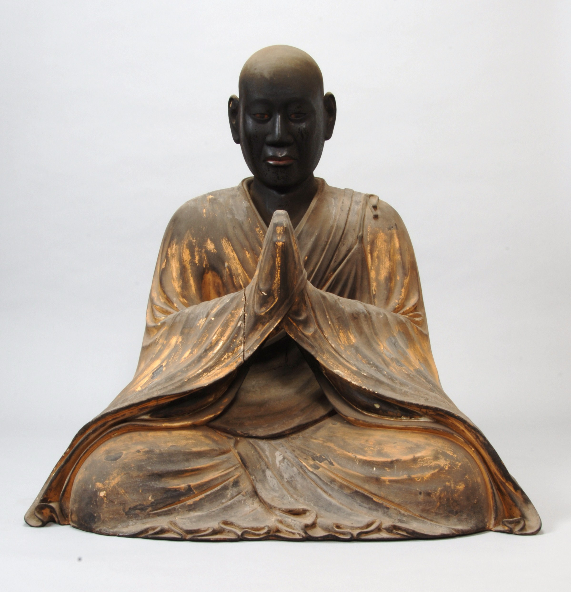

高野山には、山上に寺が集まる風景と、それを支えてきた人々の仕事がある。空海は修行の道場を求め、人々は弘法大師の近くで供養されたいと願い、僧侶は今も毎日、大師へ食事を届ける。その仕事と願いの積み重ねが、高野山という場所を形づくった。
地形や文書から調べる歴史、寺に伝わる物語、信仰の説明は、それぞれ伝えるものが違う。どの資料を読んでいるかを知ると、確かめられる出来事と、この場所が大切にされる理由の両方が分かりやすくなる。
1 「高野山」は、どの山の名前なのか
高野山は、弁天岳、楊柳山、摩尼山などの峰に囲まれた、山上盆地一帯の総称である。ひとつの頂上の名前ではなく、およそ標高800メートルの盆地に、寺院と町が広がっている。盆地を囲む峰は、寺や道路のある場所より高い。持明院「高野山とは」、和歌山県世界遺産センター「高野山」
816年、空海はこの地に道場を開く許可を朝廷から得た。総本山の年表では、同年6月に土地を与えてほしいと願い出て、7月に勅許（天皇の許可）を得たとされる。伽藍（寺院の建物群）の建設に着手したのは819年。816年は、すべての堂塔が完成した年ではなく、構想を許可へつないだ年である。金剛峯寺「年表」
「金剛峯寺」には、拝観できる本坊の建物を指す使い方と、高野山全体を寺として捉える使い方がある。寺側は、高野山を一つの境内と見る「一山境内地」という考え方を示している。案内を読むとき、特定の建物の話か、山全体の話かを分けると、言葉の意味がつながる。金剛峯寺「総本山金剛峯寺とは」
高野山の中心となる場所に、壇上伽藍と奥之院がある。壇上伽藍は、堂塔が並び、修行や儀礼を行う場。奥之院は、弘法大師御廟（大師を祀る場所）を中心とする信仰の場である。同じ高野山の中で密接に関わりながら、役割には違いがある。金剛峯寺「高野山の見どころ」
2 空海は、なぜこの場所を選んだのか
空海がなぜこの場所を選んだかは、『性霊集』に収められた上表文から読める。上表は、朝廷へ願いを提出する文書である。そこでは、修禅（瞑想などの修行）の道場を建てたいと願い、周囲を高い峰に囲まれた静かな平地を説明する。高野町の歴史資料も、この文書を開創の根拠として取り上げている。高野町「高野参詣にみる歴史的風致」
山深い場所なら、人の出入りや日々の雑事から距離を置ける。そこに平地があれば、道場を建て、人が一定期間とどまって修行できる。この二つの条件が高野山ではそろう。金剛峯寺山林部も、上表文の「静かな平地」という表現に注目し、開創の場所に選ばれた意味を説明している。金剛峯寺山林部広報・第7号
上表文では、その土地をすでに「高野」と呼んでいる。そのため、地形を見て空海が高野山と命名したとまでは分からない。地形の説明と、地名の由来の確定は別の問題である。「高い野原」という現代の言葉の意味から、誰が名づけたかを逆算することはできない。和歌山県調査報告「高野地域の地形と植生」
では、白と黒の犬や、空を飛ぶ仏具の話は何なのだろう。これらは、高野山が聖地となる由来を伝える物語である。
寺の開創物語では、空海は狩場明神に出会い、白黒二匹の犬に導かれる。そして丹生明神から土地を授けられる。土地の神が道を示し、仏教の道場を開くことを支える物語である。高野山に日本の神々が祀られる背景にも、この話がある。丹生明神と狩場明神は、山を守る神として大切にされてきた。金剛峯寺「弘法大師の誕生と歴史」、高野山霊宝館「高野山の神々展」
三鈷杵は、先端が三つに分かれた密教の仏具である。伝承では、空海は唐から帰る際、道場に適した場所を示してほしいと祈ってこれを投げ、それが高野山の松に掛かっていたという。この話が「三鈷の松」と結びついている。金剛峯寺自身も、この飛来の話を開創に関わる伝承として紹介している。金剛峯寺「高野山 開創1200年」
「飛行三鈷杵」という文化財は今に伝わる。一方、海を越えて飛んだという出来事は、信仰を伝える物語として読む。物語は、空海がふさわしい場所へ導かれたことを語り、上表文は、朝廷に何を願い、土地をどう説明したかを記す。それぞれが伝える内容と、歴史の証拠として確かめられる範囲には違いがある。高野山霊宝館「高野山の名宝」
周囲の峰を蓮の花びらに見立てる説明は、高野山の地形に、密教の曼荼羅が示す世界を重ねた見方である。山の形を測る地図と、その地形に宗教的な意味を見ることが、同じ場所で結びついている。高野山霊宝館「高野山の神々展」
3 五輪塔の五つの形は、何を表すのか
奥之院では、四角い石の上に、丸い石や笠のような石を重ねた五輪塔が見られる。下から、地・水・火・風・空という五大を表す。五大は、体や宇宙の成り立ちを考える五つの要素である。文化庁も、五大の考え方を形にした塔と説明している。文化庁「木製漆塗彩色金銅種子装五輪塔」
| 下からの位置 | 五大 | 基本となる形 | 見分ける手掛かり |
|---|---|---|---|
| 1 | 地 | 方形 | 最も下の四角い部分 |
| 2 | 水 | 円形 | 丸くふくらんだ部分 |
| 3 | 火 | 三角形 | 笠や屋根に見える部分 |
| 4 | 風 | 半月形 | 上部の半球状の部分 |
| 5 | 空 | 宝珠形 | 頂上の、しずくのような形 |
空宝珠形 · 広がり
風半月形 · 動き
火三角形 · 熱
水円形 · うるおい
地方形 · 支える
形と五大の対応を知ると、五輪塔が、宇宙の成り立ちを目に見える形で表していると分かる。石の形は、装飾とともに教えを思い出す役割を持つ。この対応は、高野山の宿坊協会の解説でも確かめられる。「高野山マメ知識」
六大は、五輪塔が示す地・水・火・風・空に、「識」を加えた教えである。識は、心や、ものを知る働きに関わる。五つの要素と心の側面を合わせて、世界と人間の成り立ちを考えると、六大の理解の入口になる。高野山東京別院「即身成仏」
五大の「要素」は、現代化学の元素とは違う。地を固体、水を液体、風を気体にたとえる説明は分かりやすさを助けるが、密教を物質の状態の科学的分類に置き換えるものではない。また識は、人の内側に独立したものとして閉じ込められるのではなく、五大と切り離せない世界の働きとして考えられる。高野山不動院「お大師さまのみ教え」第10章、高野山大学密教文化研究所紀要・六大の説明
五輪塔は五大を形で表すので、六大の教えがあっても、石を六段にする必要はない。教えの項目数と、象徴の形の数を、そのままそろえるわけではないのである。金剛峯寺は、五輪塔を大日如来と結び、奉納することを弘法大師と縁を結ぶ営みと説明している。金剛峯寺「令和の宝塔」
五輪塔は、石塔の形の名前である。遺骨を納めた墓か、誰を供養する塔かは、形だけでは判断できない。特定の人の全遺骨があるかどうかも、その塔の由来を調べて確かめる。
4 なぜ高野山は、秀吉の焼き討ちを免れたのか
1585年、羽柴秀吉による紀州攻めの際、根来寺や粉河寺などが攻撃を受けた。高野山にも降伏が求められ、このとき交渉に関わったのが木食応其である。高野山は応其の仲介によって降伏し、焼き討ちを免れたと公的資料は説明している。和歌山県「和歌山だより」第181号
「羽柴秀吉事書写」の解説では、1585年4月に五つの降伏条件が示され、高野山側が受け入れたことが分かる。紹介される文書は、同年6月の朱印状（朱色の印を押した命令や許可の文書）の写しで、寺領（寺の領地）の扱いと金堂再建の寄付に関わる内容を含む。名台詞で秀吉を感動させた場面だけでなく、条件を受け入れ、その後の関係を築いた過程にも目を向けたい。文化庁・文化遺産データベース「羽柴秀吉事書写」
高野山を守るには、軍事的な圧力の下で条件を受け入れる交渉と、その後の領地や建物の整備が必要だった。信仰の場を続ける仕事は、政治との関係や土地の管理にも関わっていた。
応其は高野山を守った後も、寺院を復興する仕事を担った。和歌山県立博物館は、豊臣家が造営した方広寺、東寺、醍醐寺などに関わる勧進聖として紹介している。勧進は、堂塔を建てるために協力や寄付を募ること。応其は、宗教の働きとともに、政権と寺院をつなぎ、建設を進める仕事もしていた。和歌山県立博物館「木食応其展、展示替え開始！」
比叡山の焼き討ちは1571年の織田信長によるもの、高野山と秀吉の交渉は1585年の出来事である。攻めた人物も時期も違う。寺院ごとの軍事や政治の関係、交渉の条件を調べてこそ、結果の違いを考えられる。教えの優劣や宗派の性格だけでは説明できない。滋賀県文化財保護協会・木戸雅寿「織豊期の甲賀」
高野山が続いた歴史では、危機に直面した人々が、どう交渉し、その後の関係を築いたかに注目したい。超自然的な保護を比べるより、祈りとともに行った、具体的な選択を資料から読むことができる。
「木食が高野」 — 秀吉は、なぜここまで信頼したのか

秀吉にとっても、応其は山にいる僧の一人を超える役を担った。戦争を終える交渉、山内の調整、資金と寺領の確保、堂塔の建設、法会に必要な人集め。依頼を受けて、実際に形にする人だった。 この関係を伝えるのが、応其自身の覚書に記す次の言葉である。和多昭夫「木食応其考（承）」82–86頁
原文 · 木食応其覚書、天正14年（1586）7月28日付。和多論文86頁所引
高野の木食と不可存、木食か高野と可存旨
読み下し 高野の木食と存ずべからず、木食が高野と存ずべし、との旨。
読み こうやのもくじきとぞんずべからず、もくじきがこうやとぞんずべし、とのむね。
意訳 「高野山にいる木食、と考えるのではない。木食あっての高野山だ、と考えよ」という趣旨。
これは、応其が記した秀吉の発言で、秀吉の自筆文書ではない。覚書によると、大坂城の座敷には応其、聖護院殿、連歌師たちがいた。高野山からの使僧二人は末座、諸大名は次の間にいたという。秀吉は、この言葉を山内の僧へ伝えるよう繰り返し命じた。応其は帰山後も感激の涙を抑えられず、出来事を書き留めたと述べる。親しさだけでなく、秀吉が山内での応其の発言力を支えた場面として読める。和多論文86頁
第一幕：交渉の仕事は、名台詞の後にも続く
1585年4月、秀吉の条件を受け取った応其たちは、山へ持ち帰り、受け入れをまとめた。主な要求は、武器や鉄砲を置いて仏事と学問に専念すること、敵対者をかくまわないこと、寺領の根拠を明らかにすることだった。山内には、学問を担う学侶、実務を担う行人、各地で信仰を広める聖という立場の違いがある。秀吉との交渉に加え、その人々の間で合意を作る仕事も必要だった。和多論文82–84頁、和歌山県教育委員会「木食応其と高野山」
応其は、守りたい場を続けるため、何を受け入れればよいか、どの条件なら存続できるかを具体的にした。信仰への確信を持つことと、軍事的な要求に対応すること。その両方を引き受けたところに、交渉の仕事の面白さがある。
第二幕：焼け残った山を、次にどう立て直すか
存続を決めた後、応其は秀吉の支援を金堂の再建へつないだ。1587年に完成し、秀吉の弟・秀長が名代（代理）として出席する。後には、応其の興山寺と、秀吉の母を供養する青巌寺が、高野山の中心を担った。この二寺が1869年に合併し、現在の金剛峯寺につながる。今日訪れる金剛峯寺にも、空海の時代の後に行われた、応其と豊臣家の仕事が重なっている。和歌山県教育委員会・同資料、霊宝館「高野山と豊臣家」
第三幕：僧侶が、京都の工事と大法会を動かす
応其は山の外でも、東寺の修復などを担った。慶應義塾に残る、1598年とされる自筆書状には、方広寺大仏殿の供養のため、京都・南都・天王寺の楽人を集め、舞楽を準備する依頼がある。「早々御用意肝要候」――早く準備することが肝心だ、という言葉から、急ぐ現場が見える。大きな仏教行事も、演奏する人を集め、日時を伝え、役割を整える仕事によって実現する。慶應義塾「木食応其筆書状」・原文と実物、和歌山県立博物館・東寺修復の解説
第四幕：一生使える読み方 — 「思い」と「実務」の間を見る
応其を見るときは、信頼を得た後、何を引き受け、どう形にしたかにも目を向けたい。秀吉との親しさだけを、成功の原因にすることはできない。現代の仕事でも、相手へ提案すること、内部の合意を作ること、予算、日程、担当者を確保することは、それぞれ必要だ。「理解してもらえた」の次に、「次の人が動ける形になったか」と問える。これは、史料から生活へ引き寄せた読み方で、応其自身の言葉ではない。
10月5日は「高野山と豊臣家」の展示期間。秀吉や高野山に関わる文書、応其像などを公開リストと照らして見られます。朱印、紙、筆跡、誰宛ての文書かを観察すると、名台詞の背後にある交渉が手触りを持ちます。
10月5日の霊宝館へ →5 奥之院には、なぜ敵味方も企業も集まるのか
奥之院の供養塔は、約20万基ともいわれる。皇族、武将、一般の人々まで、多くの人が長い年月をかけて塔を納めてきた。この数字は、すべての墓を厳密に数えた値と受け取るより、積み重なった供養の規模を示すものとして読みたい。金剛峯寺「令和の宝塔」
人々は、弘法大師のもとで救われ、供養されたいと願った。持明院の説明では、生前に参れなかった人も、納骨や戒名（仏教で授けられる名）を届け、功徳（仏道で積むよい行いの働きや利益）を願う。この信仰が、住む土地や所属の違う人々を高野山へ結びつけてきた。持明院「供養・納骨」
金剛峯寺の現在の納骨案内は、宗旨・宗派を問わないとしている。亡き人や家族が、それまで真言宗に属していなくても、この聖地で供養を願える。金剛峯寺「お問い合わせ」納骨について
生前に敵対した人物の供養塔も、同じ場所にある。これは、後の人々がそれぞれの亡き人を悼んだことを示す。生前の対立がなかったことや、当人同士が奥之院で和解したことの証拠ではない。
企業の供養塔では、創業者、亡くなった従業員や関係者などを供養する。会社という法人を死者として扱うわけではない。国立歴史民俗博物館の中牧弘允は、塔や建立誌（建てた経緯を記す文書）を調べ、故人への感謝や供養、会社の発展、安全への願いなど、複数の意味を確かめている。中牧弘允「高野山と比叡山の会社墓」
商品を思わせる形の塔でも、その形だけでは、広告のためかどうかは分からない。碑文や建立誌には、誰を悼み、何を願って建てたかが記されることがある。形、建てた人、供養する相手、建立年を一つずつ読むと、会社や社会の中で営まれる追悼の姿が見える。
「墓」「供養塔」「慰霊碑」は、同じものなのか
墓所は墓がある場所、供養塔は亡き人を供養する塔、慰霊碑は亡き人を慰め、悼む碑、顕彰碑は功績を伝える碑である。役割が重なることはあっても、同じ意味の呼び名ではない。
一つの石造物が、複数の役割を担うこともある。遺骨の有無は、呼び名だけで決めず、個々の由来から確かめる。奥之院の維那（儀礼や供養を担う僧職）の説明によると、納めるものには、分骨（遺骨の一部）に加え、遺髪やゆかりの品もある。金剛峯寺・奥之院維那インタビュー
「有名人のお墓」と案内されても、全遺骨があるのか、一部を納めたのか、供養のための塔なのかは、それぞれ確かめる必要がある。奥之院全体を、遺骨のない記念碑だけの場所と見ることもできない。
田中角栄について確認できること
田中角栄顕彰会は、2026年7月30日に奥之院で、田中角栄の供養塔と顕彰碑「不動心」の建立が完了したと発表している。場所は、豊臣秀吉公の墓所に隣接する一角とされ、写真も掲載されている。田中角栄顕彰会・2026年8月5日の活動報告
この発表から確認できるのは、建てた時期と団体、説明された場所である。遺骨を納めたか、一部を分骨したかは書かれていない。供養塔の建立と、遺骨の所在は、別々に確かめる必要がある。
顕彰とは、功績を評価して、後の人へ伝えること。碑には、建立した団体の評価が表れる。それが、政治家としての評価すべてを代表するわけではない。供養の事実、遺骨の所在、人物への評価を分けると、一つの碑から読み取れる範囲が分かる。
6 生身供 — なぜ今も弘法大師へ食事を運ぶのか
生身供は「しょうじんく」、または「しょうじんぐ」と表記される儀礼である。高野山では、弘法大師が奥之院の御廟（大師を祀る場所）で、今も入定を続けているという信仰に基づき、食事を届ける。入定は、心を深く集中させる瞑想に入ること。大師は今も人々を救う存在として語られる。高野山不動院「お大師さまのみ教え」第16章
歴史年表は空海の時代と出来事を記し、信仰は今も続く大師との関係を語る。生身供は、その関係が日々の儀礼になったものだ。儀礼の意味を知ることと、肉体の生存を医学的に確かめることは、違う問いである。
原文 · 金剛峯寺の奥之院維那インタビュー紹介文
朝6時と10時半
文脈に沿った解釈 現在の生身供は、朝6時と午前10時30分の1日2回。食事は御供所で作られ、僧侶によって運ばれる。2026年の持明院による説明でも、この時刻が確認できる。持明院「雨の生身供」
生身供には、調理、運搬、配膳、読経という役目がある。御供所（食事を作る場所）で用意した料理を、白木の唐櫃（蓋と脚のある箱）に納める。僧侶は、嘗試地蔵へ供える手順を経て、大師のもとへ運ぶ。この「味見」は、人が料理の品質を検査する作業と同じ意味だけでなく、食事を整えて届ける儀礼の一部として読む。大和ハウス「絹のような白さに“高野山”が凝縮したごま豆腐」
御廟の手前には、参拝するための拝殿に当たる燈籠堂がある。建物を維持するため、食事を供える場所や参拝の通り道を変えることもある。2024年に始まった改修では、寺側は生身供などの法要を、隣接する記念燈籠堂で行うと案内した。2025年9月には、改修完成を祝う落慶法会が報告されている。金剛峯寺・改修時の案内、御入定千二百年御遠忌大法会・落慶の報告
建物を直し、場所や手順を必要に応じて調整しながら、食事を届ける務めを引き継ぐ。儀礼を守る仕事には、こうした変化への対応も含まれる。
7 供えられるのは、どのような食事なのか
献立の具体的な説明は、2025年2月の奥之院維那・仁賀大善への公式取材にある。食事を作るのは僧侶で、精進料理（殺生を避ける考えに沿って整える料理）を供える。朝は7品目、昼は約9品目。献立は日誌を見て変え、正月三が日は三の膳のおせちになる。昼の具体的な内容は非公開だ。食事とは別に、朝4時に抹茶を供える説明もある。金剛峯寺・奥之院維那インタビュー
日々、複数の料理を整えて供える仕事があることが分かる。一方、品数だけでは量や栄養は計算できない。器の大きさ、料理の重さ、材料の割合は示されていないからである。
精進料理にも、調理の工夫がある。元奥之院の料理担当で、後に奈良県山添村の不動院住職となった前川良基は、大師へカレーを出した経験を語る。牛肉エキスを使わず、スパイスを調合し、根菜などの旨味を生かしたという。毎日同じ古い和食だけを供えるという印象より、具体的な料理人の仕事が見えてくる。奈良県ビジターズビューロー「弘法大師の料理人が語る、仏教とスパイス」
この証言からは、精進の条件を守りつつ、料理の種類や作り方を工夫してきたことが分かる。確認できるのは、過去の担当者がカレーを出した経験だ。現在も決まった曜日に出るという献立までは示されていない。
パスタやコーヒーの話は、料理担当者の直接の証言かどうかを確かめて読みたい。
精進パスタは、現地取材を含む大和ハウスの記事に登場する。ただ、その献立を誰から聞いたかは明記されていない。作った本人が詳しく語るカレーと比べると、情報の伝わり方が異なる。大和ハウス・生身供とごま豆腐の取材記事
コーヒーは複数の公開記事に登場するが、ここで参照した本山の担当僧への取材や、元料理担当者の証言では確認できない。そのため、毎日供える定番とは断定できない。複数のサイトの記載が、別々の確認に基づくとも限らない。
金剛峯寺の別の取材には、内事（本山の食事などを担う部門）から学生へ出すパスタやカレーの話もある。これは、弘法大師への生身供とは対象が違う。宿坊の客、学生、僧侶、大師のどの食事を説明しているかを確かめると、献立の取り違えを防げる。金剛峯寺コラム・第3回 内事長／納所インタビュー
8 なぜ6時と10時30分なのか — 分かることと分からないこと
担当僧の取材では、午前10時30分は御供所から食事を運び出す時刻と説明される。今の時刻は確認できるが、それがいつ決まり、なぜ10時や11時ではなく10時30分になったかを示す歴史資料は、その記事に掲載されていない。
清浄心院の記事には、高野山文化歴史研究所所長・木下浩良の案内が記録されている。写真の説明では、現在は1日2回だが、過去には3回だったとされる。変更した時期と、その根拠になる文書は示されていないため、当初から常に2回だったとは言えない。清浄心院「木下浩良氏とめぐる高野山歴史探訪 第2弾」
現在の時刻と回数には確認できる根拠がある。そこへ至る歴史は、さらに史料を調べる必要がある。「空海が生前も同じ時刻に食べた」「1200年間ずっと同時刻だった」と言うには、そのことを示す別の証拠が要る。
仏教の食事の戒めと、現在の儀礼の形が似ていても、それだけで10時30分に決まった理由は分からない。由来を知るには、当時の規定、日記、儀礼書、変更を記す文書などを調べ、その教えが時刻決定に関わったかを確かめる必要がある。
6時から10時30分までは4時間30分、10時30分から翌朝6時までは19時間30分である。この数字が示すのは、食事を供える予定時刻から、次の予定時刻までの間隔だ。
人の断食時間を測るなら、最後に食べてから、次にカロリーを取るまでを確かめる必要がある。生身供の時間表は、その測定ではない。また僧侶自身が同じ2回だけ食べることも示さない。19.5時間という間隔を断食法の名前に置き換えると、儀礼の予定と人の食事を混同する。身体への効果を考えるには、この違いを押さえたい。
ひとことで 6時と10時30分は、弘法大師へ食事を届ける現在の儀礼時刻。この表だけから、人間の健康によい食事時刻・回数を決めることはできない。
9 「1200年、一日も欠かさず」は、どのような言葉か
原文 · 金剛峯寺の同インタビュー紹介文
1,200年以上にわたって1日も欠かすことなく
文脈に沿った解釈 寺側は、生身供を長い間、一日も欠かさず受け継いできたと伝える。その言葉には、大師への奉仕を代々引き受けてきたという自覚がある。一方、歴史の実証として全期間の毎日の実施を確かめるには、別に記録を調べる必要がある。
本山の年表では、空海の入定は835年である。2026年までは1191年なので、入定後の期間は「約1200年」「1200年近く」と表せる。816年の開創から数える期間と、入定後に食事を供える期間は、起点が異なる。金剛峯寺「年表」
全期間の毎日の実施を証明するには、残る史料が何年から何年までを記すか、記録のない時期をどう扱うかを確かめる必要がある。現在の献立日誌があることは分かっても、835年から同じ日誌が途切れず残ることまでは示されない。
記録で全日を証明できないことと、長い継承が作り話であることは違う。確認できる範囲を越えて肯定せず、分からない部分をすべて否定にもせず、何が伝えられ、何が記録で確かめられるかを分けて読む。
寺側は、大師への食事を長く受け継ぎ、一日も欠かさず続けてきたと伝える。現在の実施は具体的に確認できるが、全期間の全日について、同じ水準の記録を確かめたわけではない。この二点を分けて受け取ると、信仰の意味と、史料が示す範囲の両方を保てる。
ひとことで 寺院が伝える継承の言葉は、そのまま受け止める。全日分の記録を確認したこととは分ける。「未確認」を「一度も行われなかった」に言い換えることもしない。
高野山を支えてきたのは、塔を建て、亡き人の名を届け、寺領をめぐって交渉し、食事を作って運ぶ人々である。山上の道場、奥之院の石塔、毎日の生身供を一緒に見ると、それぞれの役目が、この場所を続ける仕事としてつながっていると分かる。
実物を見る — 今回の旅で行ける、もう二つの候補
高野山霊宝館：10月5日の予定に入れてある
9:00–17:00、最終入館16:30、一般1,300円。秋期企画展「高野山と豊臣家」は10月3日から開催し、会期中無休。公開された出品リストには、空海直筆の原本は確認できない。 『聾瞽指帰』を所蔵していることと、この日に展示されることは別なので、直筆を目当てにするなら電話0736-56-2029で当日の公開を確認したい。霊宝館の利用案内、今回の企画展と公開リスト
京都・東寺：密教の像の世界を、この目で見るなら最有力
宝物館の秋期展「東寺五重塔の美術と歴史」は9月20日–11月25日、9:00–17:00、入館16:30まで、一般600円。国宝の兜跋毘沙門天立像など、公開内容を公式で確認できる。別に金堂・講堂は一般800円で、講堂の立体曼荼羅を見られる。宝物館だけ600円、金堂・講堂と合わせて別々に買うと1,400円。観智院も含める共通券は1,500円。空海直筆『風信帖』は公開予定がないとFAQにあり、今回の直筆鑑賞は確認できない。東寺の2026年秋期案内、風信帖の公開について
大阪から半日ほどの寄り道の候補になる。10月6–8日の予定へ自動で加えるのではなく、旅を延ばす場合に選べる場所として考えたい。五重塔内部の特別公開は10月31日以降なので、今回の日付では見られない。
奈良国立博物館：無料の仏像展示を、短く濃く見る
青銅器館2階の「ナラハク仏像セレクション」は、国宝・薬師如来坐像や重要文化財・愛染明王坐像などを展示。無料、9:30–17:00。10月5日（月）は休館で、10月4日・6–8日なら候補になる。仏像館本館は改修で休館しているため、従来の大きな展示全体を見られる案とは異なる。空海直筆の展示は確認できない。奈良国立博物館・展示案内
もう一段、本文の奥へ
気になった言葉を開く。原文の表現から意味をたどり、身近な場面へ戻して考える。
01開創の上表 — 静かな山で、何をするのか地形の発見を、修行の場をつくる願いへ結ぶ。
原本の表現
平原の幽地有り。名付けて高野と曰う。
読み へいげんのゆうちあり。なづけてたかのという。
高野山開創の上表・金剛峯寺が掲げる訓読 · 朝廷に土地を願い出る文章の引用
文脈に沿って読む
上表は、朝廷へ提出する願いの文書である。空海は若いころ山水を巡り、吉野から南へ、西へ歩いて高野という平地を見たと述べる。山深い場所なのに平地がある。この組み合わせが、都の日々の雑事から距離を取りながら、人がとどまり、道場を建てて修行する条件になる。
静かな場所を見つけた、という旅行記だけではない。そこで修禅の道場を開きたいと願い、それを朝廷の許可へつなぐ文章である。教えを実践するには、身体を置く場所、続けて学ぶ時間、人と建物を支える条件がいる。空海の思想と、山の地形と、土地を使う制度が一つの仕事として結びつく。
816年は勅許を得た開創の起点で、伽藍が現在の姿で完成した年ではない。願いを文章にし、土地を得て、実際に山へ入り、建設を進めるには年月がかかる。高野山を歩くときは、目の前の完成した建物から、その前にある発願と準備を想像できる。
中学生にもわかる説明
上表は、朝廷へ願いを提出する文書です。空海は、高野山に修行の道場を開くため、この文章を書きました。山深い場所に平地があり、都の雑事から離れて、とどまって修行できると説明します。静けさと、実際に人が暮らせる地形の両方が必要でした。
「気に入った場所を見つけた」というだけでは、道場はできません。土地を使う許可を得て、建物を建て、人が学び続ける条件を整える必要があります。空海の文章は、その願いを、朝廷に認めてもらうための仕事でもあります。
816年は、開創の勅許（天皇の許可）を得た起点です。その年に今の伽藍（寺院の建物群）がすべて完成したのではありません。現地で建物を見るときは、その前にあった、場所の発見、願い、許可、建設という歩みまで想像できます。
生活で確かめる
続けたい学びを一つ選び、場所・時間・必要な道具を決める。やる気が戻るのを待つより、その学びが始めやすい場を整える。
持ち帰る問い 自分が大切にしたい学びは、どんな場所と時間があれば続けられるだろう。
金剛峯寺・上表と開創の目的 ／ 高野町・上表と歴史的風致 ／ 金剛峯寺・勅許から伽藍建立へ
この項目の問い合わせ文
高野山開創の上表文について中学生にもわかるように説明して。 原本の表現とその解説、さらにそれを中学生レベルにまで落とし込んだ解説 という構成で回答してください。 文字数は必要最大限で、本質を捉えながら遊び心を持たせながら文章に記すこと。 目的は『一生使える知識としてまとめること』です。 省略しないでほしい項目： - 開創の上表――静かな山で、何をするのか：地形の発見を、修行の場をつくる願いへ結ぶ。 各項目は、必要最小限の原文と書名・位置・一次URL→意味訳と文脈→中学生にもわかる説明、の三層にしてください。新しい漢文引用には解説用の読み下しとかなを付けてください。既存の現代訳の長い転載は避け、後世の伝承と当時の史料、現代の例えと原典の主張を区別し、未確認は推測で埋めないでください。 資料の調査は、論点に直結する一次資料・公式公開資料の少数の強い根拠を精読することを優先してください。同じ説明を探すためだけに検索数を増やさず、確認できた範囲と未確認を分け、必要な本文の読解へ時間を使ってください。
Proの解説を読む
高野山開創の上表 — 地形から道場へ（実回答の対象抜粋）
同じ実回答から、前置きと原文を読む五節、願いをつなぐ結びを残しました。開創伝承との読み分けを扱う第6節はで読めます。
高野山開創の上表 — 静かな山で、何をするのか
空海が願ったのは、ただ静かな山に住むことではありません。静かな山の地形を生かして、修行を続けられる場所をつくることでした。 しかも、それを自分だけのためではなく、国家と修行する人々のための事業として説明しています。ここが、この上表文の中心です。慶應義塾大学 IIIF
「上表（じょうひょう）」とは、天皇に差し出す正式な文書です。この上表は、弘仁七年、すなわち816年六月十九日に、高野山を賜りたいと願って提出されたものです。金剛峯寺の公式年表では、同年七月八日に開創の勅許を得たとされています。相手は嵯峨天皇でした。なお、ここでの月日は当時の暦によるもので、現在の暦の六月十九日・七月八日とそのまま重ねるものではありません。高野山公式サイト
本文は『性霊集（しょうりょうしゅう）』巻九に伝わります。以下では、慶應義塾大学公開の『続遍照発揮性霊集補闕鈔』巻九、PDF14〜16頁の伝本画像を中心に読み、国際日本文化研究センター公開『古事類苑』所引の本文とも照合します。日文研・地部「山下」846頁。816年に提出された空海自筆の原紙を確認した、という意味ではありません。 読み下しと意味訳は説明のために付け、引用中の「……」は省略を示します。慶應義塾大学 IIIF
1．山は「何もない場所」ではなく、何かを育てる場所
① 原文・読み下し・出典
山高則雲雨潤物。
解説用の読み下し
山（やま）高（たか）ければ、則（すなわ）ち雲雨（うんう）、物（もの）を潤（うるお）す。
位置・一次資料：『性霊集』巻九・開創の上表、冒頭。慶應義塾大学公開本・PDF14頁左。慶應義塾大学 IIIF
② 意味訳と文脈
意味訳：高い山には雲や雨が生じ、それが万物を潤します。
続く文では、水が集まるところに魚や龍が生まれ育つ、と述べます。そのあと、釈迦や観音と結びつく山、さらに中国の修行の場へと話を進めます。つまり、冒頭の自然描写は、景色を褒めるだけの飾りではありません。場所のあり方が、そこで営まれる生命や修行を支えるという説明の入口になっています。慶應義塾大学 IIIF
ここは、現代の気象学の法則を述べた文章ではなく、自然の働きを用いた導入です。文脈に即していえば、山は世間から遠ざかっているから無意味なのではなく、遠くにありながら恵みをもたらす場所として描かれている、と読めます。慶應義塾大学 IIIF
③ 中学生にもわかる説明
現代のたとえなら、植物を育てるとき、種だけあっても十分ではありません。育つための土や水、日当たりが必要です。
空海は、それと似た発想で話を始めています。
「修行しよう」という気持ちだけでなく、修行を支える場所も必要だ。
ただし、「山に入れば自動的に悟れる」という話ではありません。よい畑があっても、種まきや世話が必要なのと同じです。
2．お寺も学者もいる。それでも、足りないものがある
① 原文・読み下し・出典
實是禪教未傳、住處不相應之所致也。
……深山平地尤宜修禪。
解説用の読み下し
実（じつ）に是（こ）れ、禅教（ぜんきょう）未（いま）だ伝（つた）わらず、住処（じゅうしょ）相応（そうおう）せざるの致（いた）す所（ところ）なり。
……深山（しんざん）の平地（へいち）、尤（もっと）も修禅（しゅぜん）に宜（よろ）し。
位置・一次資料：『性霊集』巻九・開創の上表、国内仏教の現状を述べたあとの問題提起。慶應義塾大学公開本・PDF15頁左。慶應義塾大学 IIIF
② 意味訳と文脈
意味訳：これは、禅定の教えがまだ伝わっておらず、住む場所も修行に適していないことによるものです。……深い山の中の平らな土地は、とりわけ禅定を修めるのに適しています。
「これは」が指す内容を知るには、直前が重要です。
空海はまず、歴代の天皇が仏教を大切にし、寺院が数多く建ち、教えを講じる優れた僧も各寺にいる、と述べます。そのうえで、深山で禅定を修める人が乏しいことを問題にするのです。既存の仏教を全部否定してから自分を売り込むのではなく、すでにある充実を認め、そのうえで不足を示しています。慶應義塾大学 IIIF
高山深嶺乏四禪客
とあります。解説用には「高山深嶺に四禅の客乏し」（かな：こうざんしんれいにしぜんのきゃくとぼし）と読み、高い山や深い峰に、四禅を修める修行者が乏しい、という意味です。四禅は初禅・第二禅・第三禅・第四禅という四つの禅定の境地を指します。ここでは、静かな場所を楽しむ人ではなく、心を定める仏道の修行を行う人のために道場を求めています。中学生向けに言えば、「教えを聞く場に加え、その教えを実際に修め続ける場を整えたい」ということです。慶應公開本・PDF15頁左、萬福寺・長澤弘隆の本文解説PDF12頁。
ここでの修禅（しゅぜん）は、心を定め、禅定を修める仏道の実践を指します。「禅」の字があるからといって、後世の曹洞宗・臨済宗などの宗派名と同一視してはいけません。また、ただ気分を落ち着けるための休養とも違います。本文では、仏道の修行の場が問題になっています。慶應義塾大学 IIIF
なお、これは新しい道場の必要を訴える空海の問題提起です。「当時の日本には瞑想する人が一人もいなかった」と証明する全国調査ではありません。さらに、本文は経典の説に従って立地条件を示していますが、ここでは、その「禅経」が具体的にどの経典のどの箇所かまでは確定しません。慶應義塾大学 IIIF
③ 中学生にもわかる説明
現代の学校にたとえるなら、
「教科書もある。説明の上手な先生もいる。けれど、落ち着いて実験や練習を続ける場所が足りない」
という問題提起に近いものです。
説明を聞いて理解することと、自分で実践を続けることは、つながっていても同じではありません。
空海は、後者を支える場所をつくろうとしているのです。
3．若いころに歩いた地形が、修行地の条件と結びつく
① 原文・読み下し・出典
空海少年日好涉覽山水。
……有平原幽地、名曰高野。
……四面高嶺、人蹤絕蹊。
解説用の読み下し
空海（くうかい）、少年（しょうねん）の日（ひ）、好（この）んで山水（さんすい）を渉覧（しょうらん）す。
……平原（へいげん）の幽地（ゆうち）有（あ）り、名（な）を高野（こうや）と曰（い）う。
……四面（しめん）高嶺（こうれい）にして、人蹤（じんしょう）、蹊（こみち）を絶（た）てり。
位置・一次資料：『性霊集』巻九・開創の上表、高野の位置と地形を述べる部分。慶應義塾大学公開本・PDF15頁左〜16頁右。慶應義塾大学 IIIF
② 意味訳と文脈
意味訳：私は若いころ、好んで山や川を歩き巡りました。……そこには平らで奥深く静かな土地があり、高野と呼ばれています。……周囲には高い峰があり、人の通う跡も絶えています。
省略した部分には、吉野から南へ一日、さらに西へ二日ほどの道程にその土地があり、紀伊国伊都郡の南に当たると考えられる、という説明があります。慶應義塾大学 IIIF
ここで、直前の立地条件を思い出してください。
必要なのは、単に「高い山」ではありません。「深い山の中にある、平らな土地」です。そして、空海が挙げる高野には、周囲の高い峰と、内側の平らな土地があります。一般的な条件の説明が、具体的な候補地の提示へつながっています。慶應義塾大学 IIIF
論理を取り出すと、こうなります。
修行に適する地形がある → 自分は、その条件に合う高野という土地を知っている。
ただし、本文から確認できるのは、空海が若いころの山水遍歴と高野の地形を、このように説明していることです。「少年」を現代の未成年という年齢区分に固定したり、訪問年を特定したりすることはできません。また、人跡の乏しさを述べる表現を、そのまま「以前から誰も利用していなかった土地の証明」にすることもできません。慶應義塾大学 IIIF
③ 中学生にもわかる説明
現代のたとえなら、「落ち着いて練習できる場所が必要だ」と考えたときに、以前見た場所を思い出し、
「周りは静かで、中には活動できる広さがある。あそこなら、目的に合う」
と候補を挙げるようなものです。これは、空海の実際のせりふを再現したものではなく、文章のつながりを示すたとえです。
風景の記憶が、「ここで何ができるか」という構想へ変わる。
高野の地形は、景色の説明として置かれているだけではありません。道場をつくる願いを支える理由になっています。
4．荒れた藪を開き、「修行する一院」をつくる
① 原文・読み下し・出典
今思、上奉爲國家、下爲諸修行者、芟荑荒藪、聊建立修禪一院。
解説用の読み下し
今（いま）思（おも）うに、上（かみ）は奉（たてまつ）りて国家（こっか）の為（ため）に、下（しも）は諸（もろもろ）の修行者（しゅぎょうしゃ）の為に、荒藪（こうそう）を芟荑（さんい）し、聊（いささ）か修禅（しゅぜん）の一院（いちいん）を建立（こんりゅう）せん。
位置・一次資料：『性霊集』巻九・開創の上表、建立の目的を述べる中心部分。慶應義塾大学公開本・PDF16頁右。慶應義塾大学 IIIF
② 意味訳と文脈
意味訳：いま、国家のため、そして修行する人々のために、荒れた藪を切り開き、禅定を修める道場を一つ建てたいと考えています。
ここには、目的と行動が一緒に書かれています。
「国家」と「諸修行者」は、誰のためにつくるのか。「芟荑」と「建立」は、何をするのかです。「芟荑」は草を刈り除くことを意味します。自然のよさを発見して終わるのではなく、藪を除き、実際に修行できる場へ整えるところまで、願いが具体化されています。慶應義塾大学 IIIF
また、国家のためという目的を明記している以上、この山を「政治や社会との関係を完全に断ち切る、自分だけの隠れ家」と説明するのは不適切です。世間の騒がしさから距離を取ることと、国家や他の修行者への関心を捨てることは、本文では同じではありません。慶應義塾大学 IIIF
「一院」は、ここでは一つの修行の施設・拠点を願う表現です。これだけから、現在の高野山のすべての堂塔や町並みが、当初から完成形として設計されていた、と読むことはできません。慶應義塾大学 IIIF
③ 中学生にもわかる説明
「いい場所を見つけた。自分だけで使おう」
ではなく、
「ここを整えれば、修行する人たちの役に立つ。国のために励む場にもなる。だから、道場をつくりたい」
という願いです。これは本文の趣旨を言い換えたものです。
山を選ぶ話が、人を支える場所をつくる話へ変わりました。
そして、少し面白いのは、立派な願いのすぐ隣に「藪を刈る」という作業があることです。理想は、空中に浮かんだままでは実現しません。この上表では、ちゃんと地面に降りてきます。
5．よい目的でも、勝手には使わない — 許可と、その後の実践
① 原文・読み下し・出典
望請蒙賜彼空地、早遂小願。
然則四時勤念、以答雨露之施。
解説用の読み下し
望（ねが）わくは請（こ）う、彼（か）の空地（くうち）を賜（たま）わることを蒙（こうむ）り、早（はや）く小願（しょうがん）を遂（と）げん。
然（しか）らば則（すなわ）ち、四時（しじ）、勤（つと）め念（ねん）じて、以（もっ）て雨露（うろ）の施（ほどこ）しに答（こた）えん。
位置・一次資料：『性霊集』巻九・開創の上表、土地の下賜を願う結び。慶應義塾大学公開本・PDF16頁左。慶應義塾大学 IIIF
② 意味訳と文脈
意味訳：どうか、あの空いている土地をお与えいただき、このささやかな願いを早く実現させてください。そうなれば、四季を通して修行・祈念に励み、お与えいただいた恵みに報います。
この直前で空海は、経典に説かれる戒めとして、山河や土地などは国王のものであり、僧が他者から許されていないものを使用すれば盗みの罪になる、と述べます。さらに、仏法の興廃は天皇の心にかかるとして、大小の事柄を自分の判断だけで行うものではない、という姿勢を示します。ここには、当時の王権への理解と、僧としての戒めの両方があります。慶應義塾大学 IIIF
したがって、本文は「人がいなさそうだから、自由に使ってよい」とは進みません。地形が適していることと、その土地を使う権限があることを、別の問題として扱っています。慶應義塾大学 IIIF
「四時」は春夏秋冬です。一日四回という時刻表ではありません。また、「雨露」は文字どおりの雨や露をもらうことではなく、ここでは天皇から受ける恩恵を表します。「小願」も、自分の願いをへりくだって述べる表現として読むべきで、目的がどうでもよいという意味ではありません。慶應義塾大学 IIIF
文章のつながりにも味わいがあります。冒頭では、山の雲雨が物を潤していました。結びでは、受ける恩恵が雨露にたとえられています。自然の恵みを語って始まり、受けた恵みに実践で応える誓いで結ぶ。 この対応に注目すると、自然描写と正式な請願が、一つの文章としてつながって見えます。慶應義塾大学 IIIF
③ 中学生にもわかる説明
現代のたとえなら、学校の空き教室を借りるときに、
「よい活動だから、勝手に使います」
ではなく、
「この活動に必要なので、使用を認めてください。認められたら、その場所で継続して取り組みます」
と申し出ることに近いでしょう。ただし、当時の土地や国家の制度が、現在の学校と同じだったという意味ではありません。
この上表は、場所をもらったところで話が終わらないのが大切です。
場所を得ることは、修行を続けるための始まりなのです。
一生使える形で、一本につなぐ
この上表の流れは、次のように整理できます。
修行を支える場所が必要である → 深山の平地が適している → 高野には、その地形がある → 国家と修行者のために一院をつくりたい → 土地の下賜を願う → 許されれば、そこで修行を続けて恩に報いる。慶應義塾大学 IIIF
なお、願い出た日、許可された日、建物ができた時期は同じではありません。 金剛峯寺の公式年表も、816年の請願・勅許と、819年の伽藍建立への着手を分けています。「816年開創」を、その日に現在の高野山が完成したという意味で覚えないことが大切です。高野山公式サイト
この文章から現代への学びを取り出すなら、こう言えるでしょう。
願いを実現するには、「何をしたいか」だけでなく、「どこならできるか」「誰のためか」「誰に何を認めてもらうか」「その後、何を続けるか」まで言葉にする。
高野山開創の上表は、美しい山を紹介する文章である以上に、見いだした地形を、継続する修行の場へ変えようとする文章なのです。
02丹生明神・狩場明神 — なぜ仏教の山に神々がいるのか道を示し、土地を授け、道場を守る物語。
文脈に沿って読む
開創の物語では、白黒二匹の犬を連れた狩人が空海を高野山へ導き、丹生明神が土地を授ける。狩場明神は導く神、丹生明神は土地に関わる神として現れる。仏教の道場を建てるとき、その土地の神々が邪魔者として排除されるのではなく、道を開き、守る存在として語られている。
霊宝館の解説は、御社に丹生・狩場の両明神と、十二王子・百二十番神を祀ることを説明する。神々が四方を鎮め、交代して人々と伽藍を守ると願われる。御社を建物の一覧で通り過ぎず、伽藍の場所を守る働きという関係から読むと、なぜここにあるかが分かる。
日本の神々と仏教が関係を結ぶ神仏習合には、多くの時代と形がある。高野山の一つの物語を、その歴史の全部の説明に広げる必要はない。ここでは神々の図像や御社に、土地との関係を保ちながら道場を営む信仰が見えている。
中学生にもわかる説明
高野山の開創物語では、白黒二匹の犬を連れた狩人が空海を山へ導き、丹生明神が土地を授けます。狩場明神は道を導く神、丹生明神は土地に関わる神として語られます。仏教の場を開く物語の中で、その土地の神々が道を開き、守る役目を担っているのです。
伽藍の御社（神々を祀る社）には、丹生・狩場の両明神などが祀られています。仏の堂のそばに神の社があるのは、土地を守る神々とともに、道場を営む信仰があるからです。建物の名前だけでなく、何を守るための場所かを見ると、配置の意味も分かります。
神仏習合とは、日本の神々と仏教が関係を結ぶことです。高野山では、神と仏をどちらか一方だけ選ぶのではなく、それぞれの働きを結んで語っています。この物語は開創の信仰を伝えるもので、空海の時代に起きた出来事を、そのまま実証する記録とは異なります。
生活で確かめる
知らない場所で活動を始める前に、そこに暮らす人、使われてきた道、守られているものを知る。自分の計画だけで場所を理解したつもりにならない、という問いを持ち帰れる。
持ち帰る問い この場所では、自分が来るより前に、誰が何を大切にしてきたのだろう。
この項目の問い合わせ文
丹生明神・狩場明神と神仏の関係について中学生にもわかるように説明して。 原本の表現とその解説、さらにそれを中学生レベルにまで落とし込んだ解説 という構成で回答してください。 文字数は必要最大限で、本質を捉えながら遊び心を持たせながら文章に記すこと。 目的は『一生使える知識としてまとめること』です。 省略しないでほしい項目： - 丹生明神・狩場明神――なぜ仏教の山に神々がいるのか：道を示し、土地を授け、道場を守る物語。 各項目は、必要最小限の原文と書名・位置・一次URL→意味訳と文脈→中学生にもわかる説明、の三層にしてください。新しい漢文引用には解説用の読み下しとかなを付けてください。既存の現代訳の長い転載は避け、後世の伝承と当時の史料、現代の例えと原典の主張を区別し、未確認は推測で埋めないでください。 資料の調査は、論点に直結する一次資料・公式公開資料の少数の強い根拠を精読することを優先してください。同じ説明を探すためだけに検索数を増やさず、確認できた範囲と未確認を分け、必要な本文の読解へ時間を使ってください。
Proの解説を読む
丹生明神・狩場明神 — なぜ仏教の山に、神々がいるのか
高野山の開創伝承で、神々は「仏教に追い出される存在」ではありません。空海を導き、修行の場所を授け、その道場を守る存在として登場します。 そして空海の側も、その神々を敬い、祀る。この関係が、仏教の聖地に神々がいる理由の中心です。丹生都比売神社 | 紀伊山地の霊場と参詣道の世界文化遺産
ただし、「神々との出会いを語る物語」と「空海が当時、朝廷に提出した願いを伝える文書」は、同じ種類の証拠ではありません。 物語の意味を味わいながら、歴史上どこまで確認できるのかも分けて見ていきましょう。
以下、『今昔物語集』の原文は公開翻刻で確認した表記を用います。写本原画像との字形の再照合までは行っていません。一方、『性霊集』の引用箇所は、慶應義塾大学公開本の画像で確認しています。漢文の句読点・読み下しは、解説のために補っています。
編集側の史料注――文書の日付、説話集の成立、刊本の制作を分ける 上表に記された816年は、その文書の日付です。国文学研究資料館は『今昔物語集』を1120〜40年頃の成立と推定しています。今回見た慶應本は1626年の刊本で、巻九は現存の『続遍照発揮性霊集補闕鈔』に属します。NDLは現巻8〜10を1079年の後補と説明します。文書が伝える請願、後代の説話、現在の宗教施設が紹介する伝承を、同じ時点の記録として扱いません。説話集の成立・国文学研究資料館、確認した刊本の書誌・慶應義塾大学、現存巻の来歴・NDL
1．まず二柱を見分ける — 「山を授ける神」と「道を開く神」
① 原表現・出典
丹生都比売神社の公式「ご祭神」では、次の別名が示されています。
「別名 丹生明神 天野明神」
「別名 高野明神 狩場明神」
出典位置：第一殿「丹生都比売大神」、第二殿「高野御子大神」。
公式URL：丹生都比売神社「ご祭神」
これは古代文書の引用ではなく、現在の神社が示す祭神の説明です。丹生都比売神社 | 紀伊山地の霊場と参詣道の世界文化遺産
② 意味と文脈
| 神の呼び名 | 現在の神社での名称 | 開創伝承で目立つ役割 |
|---|---|---|
| 丹生明神（にうみょうじん） | 丹生都比売大神（にうつひめのおおかみ） | 神領である高野山を空海に授ける |
| 狩場明神（かりばみょうじん） | 高野御子大神（たかのみこのおおかみ）。高野明神ともいう | 狩人の姿で現れ、犬を介して空海を導く |
現在の神社では、高野御子大神を丹生都比売大神の御子神として説明しています。ただし、この親子関係を含めた現在の説明を、そのまま「空海在世時の記録にすべて書かれている」と考えてはいけません。ここでは、まず現在受け継がれている神々の紹介として押さえます。丹生都比売神社 | 紀伊山地の霊場と参詣道の世界文化遺産
また、この二柱は案内や土地の授与だけで役目を終えません。高野山の守護神として、その後の僧侶の修行とも関係づけられています。丹生都比売神社 | 紀伊山地の霊場と参詣道の世界文化遺産
③ 中学生にもわかる説明
物語の入口では、こう覚えると迷いません。
狩場明神は「こちらへどうぞ」。丹生明神は「ここで修行をなさい」。
ただし、これは役割を覚えるための言い換えです。神々が実際にこう発言したという引用ではありません。
そして大切なのは、どちらも「空海に便利なことをして、そのまま退場する脇役」ではないこと。道場ができた後も、大切に祀られる相手なのです。
2．道を示す — 狩人と犬は、空海をどこへ導くのか
① 原文・出典
『今昔物語集』では、空海に出会った猟人がこう語ります。
「我れは是南山の犬飼也。我れ其の所を知れり。速に教奉るべし」
解説用の読み
我（われ）は是（こ）れ南山（なんざん）の犬飼（いぬかい）なり。
我（われ）、其（そ）の所（ところ）を知（し）れり。
速（すみや）かに教（おし）え奉（たてまつ）るべし。
出典：『今昔物語集』巻十一・第二十五話「弘法大師始建高野山語」、猟人との出会いの場面。
原文公開URL：『今昔物語集』巻十一・第二十五話――公開翻刻 やたがらすナビ
② 意味訳と文脈
意味は、
私は南山の犬飼いです。あなたが探している場所を知っています。すぐにお教えしましょう。
この話では、空海は、唐で投げた三鈷が落ちた場所を探しています。それが、修行にふさわしい霊地を探すことと結びつけられているのです。猟人は犬を連れて現れ、話の後段では、この犬飼いが高野明神だったと明かされます。やたがらすナビ
物語の働きに注目すると、空海は「自分の知識と力だけで、未知の山を発見した英雄」にはなっていません。土地を知る存在に導かれて、修行の場所に到達する人物として描かれています。
ここで、小さな史料上の注意があります。現在の神社公式の伝承では犬は白と黒の二匹ですが、今回確認した『今昔物語集』の本文では、大小二匹の黒い犬です。神社自身も、伝承には細部の違いがあると説明しています。したがって、白黒の犬という現在よく知られた姿を、そのまま『今昔物語集』の原文として引用することはできません。やたがらすナビ
③ 中学生にもわかる説明
現代のたとえなら、初めて行く山で、
「地図は持っている。でも、この土地のことは、その土地を知る人に教わる」
という場面です。
ただし、物語の狩人は普通の案内人ではなく、後から神だったとわかる存在です。だから、この道案内には、単なる移動以上の意味があります。
「たどり着けた」だけでなく、「この土地の側から迎えられた」。
そう読むと、犬たちはかわいい飾りではありません。空海と山をつなぐ、大事な案内役なのです。
3．土地を授ける — 高野山は「誰もいないから使った山」ではない
① 原文・出典
同じ『今昔物語集』で、今度は山人が空海に語ります。
「我れ、此の山の王也。速に此の領地を奉るべし」
解説用の読み
我（われ）、此（こ）の山（やま）の王（おう）なり。
速（すみや）かに此（こ）の領地（りょうち）を奉（たてまつ）るべし。
出典：『今昔物語集』巻十一・第二十五話、山人に導かれて山へ入る場面。
原文公開URL：同話・山人による土地授与の段 やたがらすナビ
② 意味訳と文脈
意味は、
私はこの山の主です。すぐに、この領地をあなたに差し上げましょう。
その後、この山人は丹生明神であると説明されます。先ほどの猟人と、この山人は、本文では別の出会いとして描かれています。やたがらすナビ
重要なのは、「奉る」という言葉です。
これは、空海が神を倒して土地を奪う物語ではありません。山の主の側が、敬意をもって土地を差し出す物語です。高野山に道場を置くことが、土地の神によって認められた、という筋になっています。
現在の神社公式の伝承では、丹生都比売大神が姿を現し、高野山を授け、空海が二柱を鎮守・守護神として祀ったと語られます。こちらも、授けることと、敬い祀ることが結びついています。丹生都比売神社 | 紀伊山地の霊場と参詣道の世界文化遺産
③ 中学生にもわかる説明
「人が少ない山を見つけた。よし、勝手に学校を建てよう」
ではありません。
物語の筋は、
「この山には、もともとの主がいる。その主が、学びと修行の場所にすることを認めてくれた」
です。
現代のたとえなら、地域に新しい学校をつくるとき、建物だけでなく、その土地の人々との関係も大切にすることに似ています。
ただし、「山の神＝実在した地主」だと特定できるわけではありません。 神の物語から、隠れた実在人物を自動的に割り出すことはできないのです。ここで確かに読めるのは、山を単なる空きスペースではなく、すでに尊ぶべき存在のいる場所として描いていることです。
4．では、歴史上の土地の手続きは？ — 神への敬意と、朝廷への請願を分ける
① 原文・出典
空海の高野山請願の上表文には、次の願いがあります。
「望請、蒙賜彼空地、早遂小願。」
解説用の読み下し
望（のぞ）み請（こ）うらくは、彼（か）の空地（くうち）を賜（たま）わるを蒙（こうむ）り、早（はや）く小願（しょうがん）を遂（と）げんことを。
出典：『性霊集』巻九所収、高野山の土地を請う上表文。末尾に弘仁七年六月十九日の年月日がある文書。慶應義塾大学公開本、PDF十六頁左面、右から二〜三列目。
原本画像URL：『続遍照発揮性霊集補闕鈔』巻九・PDF十六頁 慶應義塾大学 IIIF
編集側の位置訂正 原回答の「十六頁右面」を「左面」に訂正しました。引用の「望請」は左面右から二列目末尾、「蒙賜彼空地早遂小願」は次の列にあります。同じ左面に弘仁七年六月十九日の年月日があります。
② 意味訳と文脈
意味は、
願わくは、あの空いている土地をお与えいただき、早く私のささやかな願いを実現させていただきたい。
この文書が伝えるのは、816年、空海が修行のための施設をつくろうとして、朝廷に土地の使用を願い出たことです。前後には、国家と修行者のために修禅の一院を建立したいという目的が書かれています。閲覧した資料は、その文書を収める後世の伝本であり、空海の自筆原本そのものではありません。慶應義塾大学 IIIF
したがって、二つの説明を区別できます。
上表文は、政治・制度の側から「どのように土地を願い出たか」を伝えます。
開創伝承は、宗教的な物語として「なぜこの山が道場にふさわしく、土地の神々とどのような関係にあるのか」を語ります。
これは、二つの説明が同じ事実を同じ方法で証明している、ということではありません。上表文は神との遭遇を証明しませんし、神の土地授与の物語を、そのまま朝廷の許可文書の代わりにすることもできません。
③ 中学生にもわかる説明
学校にたとえると、
「設立の申請書」と「学校の創立物語」は、役目が違う。
申請書には、土地や建物や目的を書く。創立物語には、「なぜここで学ぶのか」「どんな恩を忘れてはいけないのか」を語る。
どちらも大切にできるけれど、混ぜてはいけません。
物語を大切にすることと、その場面を歴史上の実況記録だと断定することは、別です。
5．道場を守る — 仏教には、神々を迎える場所がある
① 原文・出典
空海の文章として伝わる「高野建立壇場結界啓白文」には、次の言葉があります。
「若護正法善神鬼等、我佛法中有利益者、隨意而住。」
解説用の読み下し
若（も）し正法（しょうぼう）を護（まも）る善神（ぜんじん）・鬼等（きとう）、我（わ）が仏法（ぶっぽう）の中（うち）に利益（りやく）有（あ）る者（もの）は、意（こころ）に随（したが）いて住（じゅう）せよ。
出典：『性霊集』巻九「高野建立壇場結界啓白文」。慶應義塾大学公開本、PDF二十八頁左面。
原本画像URL：同巻・PDF二十八頁 慶應義塾大学 IIIF
編集側の読み注 漢文の読み下しとかなは、原回答の解説用の一例です。原本付訓や指定読誦音との一致は確認していません。とくに「鬼等」の「きとう」はその一致が未確認のため、辞書案ではこの語だけ無ルビで保持します。ここでは神鬼などの存在という文意を押さえます。
② 意味訳と文脈
意味は、
正しい教えを守る善い神々や霊的存在で、私たちの仏法に役立つ者は、望むままにここに住みなさい。
これは結界（けっかい）のための言葉です。修行や儀礼を行う場所を定め、その営みを妨げるものを遠ざけ、守るものを迎えようとしています。前の箇所では、正法を破壊する悪鬼神に、結界の外へ去るよう求めています。したがって、「どんな存在でも、何をしてもよい」という無条件の受け入れではありません。慶應義塾大学 IIIF
ここから読めるのは、仏教の修行の場に、仏法を守る神々が住むことは、矛盾ではないという考え方です。仏法を守ることを「護法」、土地や寺院を守る神を「鎮守」と呼ぶと、この関係をつかみやすくなります。
ただし、この引用箇所は神々を一般的に呼びかけたもので、丹生・狩場の二神を名指ししてはいません。したがって、この文章だけから犬の道案内や神の土地授与を証明することはできません。
一方、後世の『今昔物語集』では、丹生・高野の二明神について、結末近くにこう記されます。
「誓の如く山を守る」
道案内と土地の授与が、継続する守護へつながるのです。やたがらすナビ
③ 中学生にもわかる説明
結界は、ここでは単なる「ゲームの透明なバリア」ではありません。
「ここを学びと修行の場所にします。壊すものは遠ざかってください。守ってくれる存在は、どうぞ共にいてください」
という、場所の性格を定める儀礼です。
だから、神々がいること自体が問題なのではありません。仏教の側から見て大切なのは、その存在が、修行を妨げるのか、支えるのかです。
そして丹生明神・狩場明神は、高野山の伝承では、支える側として敬われます。入口まで案内して終わりではなく、始まった学びを守り続ける神々なのです。
6．神仏習合 — 神々が寺を守り、僧侶も神々を祀る
① 公式の原表現・出典
丹生都比売神社の御社の説明には、
「明神に捧げる法楽」
という表現があります。
また、同神社の「舞楽曼荼羅供」の説明では、舞楽が、
「神々へのお供え物として」
行われたと記されています。
出典位置：公式「ご祭神」末尾「高野山壇上伽藍 御社について」、および「舞楽曼荼羅供」冒頭。
公式URL：御社について／舞楽曼荼羅供 丹生都比売神社 | 紀伊山地の霊場と参詣道の世界文化遺産
② 意味と文脈
現在の高野山・壇上伽藍には、神々を祀る御社（みやしろ）があります。その拝殿である山王院では、明神に捧げる法楽などが行われ、御社は今も高野山の僧侶によって祀られています。丹生都比売神社 | 紀伊山地の霊場と参詣道の世界文化遺産
また、丹生都比売神社の公式説明によると、歴史的には高野山の僧侶が神前で法会を行い、舞楽も奉納しました。つまり関係は一方向ではありません。
神々が仏教の道場を守る。それに対して、僧侶たちも神々を敬い、祈りや芸能を捧げる。
このように神への信仰と仏教が結びつくあり方が、ここでいう神仏習合（しんぶつしゅうごう）です。単に神社と寺が近所にあるだけでなく、祭祀や儀礼の営みも関係しているのです。丹生都比売神社 | 紀伊山地の霊場と参詣道の世界文化遺産
ただし、「結びついている」と「何もかも同一である」は別です。今回の物語の中心は、神々が仏教の修行を助け、その神々を僧侶が祀るという関係です。これだけから、二柱がそれぞれどの仏と同一視されたのか、という対応まで決めることはできません。
さらに、現在の姿が昔から一切変わらず続いたわけでもありません。神社公式の由緒は、明治の神仏分離によって、境内の仏堂・仏塔が失われ、僧侶も高野山へ退去したと説明しています。結びつきの歴史と、制度的に引き離された歴史の両方があります。丹生都比売神社 | 紀伊山地の霊場と参詣道の世界文化遺産
③ 中学生にもわかる説明
「神社は神の場所、寺は仏の場所。だから、絶対に交わらないはず」
という二つの箱だけで考えると、高野山は不思議に見えます。
でも、この関係は、
「違う名前を持つ相手を、違う名前のまま大切にし、一つの修行の場を支える」
と考えると、わかりやすくなります。
神々が寺を守るだけでなく、お坊さんも神々を祀る。
お願いするだけでなく、敬意も返す。
ここで「神仏習合」は、難しい暗記用語から、互いの関係をつくる具体的な営みに変わります。
一生使える形にまとめると
狩場明神は導く。丹生明神は授ける。二柱は守る。そして、僧侶たちも二柱を祀る。 これが、高野山の開創伝承と神仏の関係をつかむ背骨です。丹生都比売神社 | 紀伊山地の霊場と参詣道の世界文化遺産
そこに、史料を読むためのもう一本の背骨を添えます。
「出来事が起きた証拠」と「人々がその出来事をどう意味づけたかを示す物語」は、区別する。
そうすれば、伝承をそのまま実況記録にすることも、「事実かどうかわからないから無意味だ」と捨てることも避けられます。
高野山の御社を見たときは、「なぜお寺の中に神社が？」から、もう一歩進んでください。
この山の学びは、山の神々への敬意も含めて語り継がれてきた――その関係が、建物の形になっているのです。
03奥之院と供養 — もう会えない人との関係を、今日どう引き受けるか名を知る先へ。その人を祈った人の願いを読む。
文脈に沿って読む
奥之院の供養塔を、有名人の一覧として見ることもできる。しかし本山の説明で中心となるのは、弘法大師のもとで救われたい、供養されたいという願いである。生前の身分や対立を越えて、亡き人の供養が同じ森で営まれる。ここで「敵味方を隔てない」は、歴史の争いをなかったことにする意味ではなく、亡き人を供養する願いの場が広く開かれていることを示す。
供養は、亡くなった人から返事が来ないから意味がない、という関係ではない。名を呼び、祈り、ゆかりの場所や物を手入れすることで、受け継いだ関係へ応える。これは仏教の功徳・救済への願いを伴う営みであり、記憶の保存だけに縮めないことも大切になる。
中学生にもわかる説明
奥之院に供養塔が集まる中心には、「弘法大師のもとで供養され、救われたい」という願いがあります。ここでの供養は、亡き人を思い、祈りや供物をささげる仏教の営みです。塔の名前を読むとき、その人だけでなく、ここに塔を建てた人の願いも見えてきます。
同じ森には、生前に敵対した側の人物の塔もあります。戦いがなかったことになるわけではありません。後の人々が、それぞれの亡き人を悼み、同じ大師のそばで供養したいと願ったのです。生前の身分や対立を越えて、供養の場が開かれていることが分かります。
塔に手を合わせたり、ゆかりの場所を手入れしたりすることは、もう会えない人との関係を、今日の行為で受け継ぐことでもあります。奥之院を歩くときは、「誰の名か」に加えて、「誰が、誰のために建てたか」を読むと、石の向こうの人々へ目が向きます。
生活で確かめる
現地で試す：気になった塔を一基だけ、名、建立者、建立年、供養対象の順に読む。全部分からなくてもよい。名前の有名さを越えて、その塔を建てた人の願いを考える。
持ち帰る問い この人の名を残し、ここで祈ったのは、どんな人だったのだろう。
この項目の問い合わせ文
奥之院の入定信仰、供養、墓・供養塔・慰霊碑について中学生にもわかるように説明して。 原本の表現とその解説、さらにそれを中学生レベルにまで落とし込んだ解説 という構成で回答してください。 文字数は必要最大限で、本質を捉えながら遊び心を持たせながら文章に記すこと。 目的は『一生使える知識としてまとめること』です。 省略しないでほしい項目： - 奥之院と供養 — もう会えない人との関係を、今日どう引き受けるか：名を知る先へ。その人を祈った人の願いを読む。 - 墓・供養塔・慰霊碑――形の奥にある願い：誰が、誰を、どんな思いで悼んでいるか。 - 奥之院と弘法大師の入定信仰：信仰の語りと供養の場所の意味を説明する。信仰の記述を現代の生物学的事実へ変換しない。 各項目は、必要最小限の原文と書名・位置・一次URL→意味訳と文脈→中学生にもわかる説明、の三層にしてください。新しい漢文引用には解説用の読み下しとかなを付けてください。既存の現代訳の長い転載は避け、後世の伝承と当時の史料、現代の例えと原典の主張を区別し、未確認は推測で埋めないでください。 資料の調査は、論点に直結する一次資料・公式公開資料の少数の強い根拠を精読することを優先してください。同じ説明を探すためだけに検索数を増やさず、確認できた範囲と未確認を分け、必要な本文の読解へ時間を使ってください。
Proの解説を読む
奥之院を読む — 名前の向こうに、祈った人がいる
奥之院を見るときは、「誰の墓があるか」から、もう一歩先へ進むと、景色の意味が変わります。
その人の名を、誰がここに置いたのか。何を願って手を合わせたのか。そして、その祈りは今、どのように続いているのか。
奥之院は、弘法大師が今も人々を救っていると信じられる場所であり、亡き人のための供養が営まれる場所でもあります。この二つを結びつけながら、信仰の語りと、史料から確認できることを分けて読んでいきましょう。高野山公式サイト
編集側の範囲注 この初回実回答の具体例は、阪神淡路物故者慰霊碑と圓通寺の小型木製五輪塔です。入定信仰、供養、墓・供養塔・慰霊碑の読み分けを扱います。企業墓と共同の記憶については、松下電器の物故者墓と奥之院英霊殿を扱う別の追補実回答を受領・確認しました。それぞれの資料が示す対象・供養や寄進の主体・未確認の納骨情報を分けています。
1．奥之院と弘法大師の入定信仰 — 「今もおられる」とは、何を意味するのか
① 原文・資料名・位置・一次URL
入定という言葉について、現在の教団がどう説明しているか。
「永遠の瞑想に入っているという信仰」
出典：高野山真言宗「宗祖弘法大師御入定千二百年御遠忌大法会プロジェクト」
位置：「御入定とは」本文。
一次URL：公式説明「御入定とは」
これは、現在の信仰を説明する教団の文章です。空海本人の著作からの引用ではありません。弘法大師空海1200年の祈り｜宗祖弘法大師御入定千二百年御遠忌大法会プロジェクト
その信仰に関わる伝承について。
「生き生きとされていたと伝えられています」
出典：総本山金剛峯寺「日本各地の大師信仰」
位置：「さまざまな大師信仰」中の「入定信仰」第1段落。
一次URL：金剛峯寺「入定信仰」
この一節は、観賢（かんげん）が奥之院の廟窟を開き、禅定中の弘法大師に出会ったとする物語の説明です。高野山公式サイト
② 意味訳と文脈
入定の基本の意味と、弘法大師についての特別な意味
入定（にゅうじょう）の基本の意味は、禅定に入ることです。禅定（ぜんじょう）とは、心を集中させる瞑想の境地をいいます。したがって、入定という語が、いつでも「亡くなること」や「永遠に生きること」を意味するわけではありません。公式説明も、語の原義と、弘法大師に関わる信仰上の意味とを分けています。弘法大師空海1200年の祈り｜宗祖弘法大師御入定千二百年御遠忌大法会プロジェクト
弘法大師の入定信仰では、835年の入定以後も、大師は奥之院にとどまり、人々を救い続けていると信じられています。金剛峯寺の御廟案内は、肉身をこの世にとどめて深い禅定に入り、人々へ救いの手を差し伸べている、という信仰を説明しています。単に「偉人の思い出が残っている」という意味に縮めてしまうと、信仰の内容を取り落とします。金剛峯寺「弘法大師御廟」の案内
ただし、この文章が述べているのは、あくまでどのように信じられているかです。
「肉身をとどめるという信仰がある」ことと、「身体の生理機能が現在も続いていることが医学的に確認された」ことは、別の主張です。公式ページの信仰の記述を、そのまま現代の生物学的事実へ変換することはできません。
観賢の物語 — 物語の中の年と、史料が書かれた年を分ける
金剛峯寺の説明では、921年に醍醐天皇から「弘法大師」の贈り名が与えられ、観賢がその報告のために高野山を訪れた、と語られます。その際、廟窟で普段と変わらない大師の姿に出会った、というのが先ほどの伝承です。公式説明自身も、これを伝説として紹介しています。高野山公式サイト
ここで大切なのは、次の区別です。
「921年の出来事として語られる物語」＝「921年にその場で書かれた目撃記録」ではありません。
この公式ページからは、921年当時の目撃記録そのものや、この伝説が初めて文字になった時期までは確認できません。したがって、観賢の物語を、空海の身体についての同時代の観察報告として扱うことは避けます。
一方で、この物語は、後世の人々が大師をどのような存在として受け止めてきたかを知る材料にはなります。「もういない師」ではなく、「今も人々を見守る師」として慕う、その信仰の姿を伝えているのです。
生身供 — 信仰が、毎日の行為になる
この信仰を具体的な行為として見ることができるのが、生身供（しょうじんぐ）です。
高野山不動院の公開説明では、これは大師への食事のお供えで、毎日午前6時と午前10時半の2回、食事が御廟へ運ばれるとされています。
資料・位置：不動院「お大師さまのみ教え・第十六章」中、「2．奥之院の御廟」→「一日二度の食事『生身供』」。
一次URL：不動院「お大師さまのみ教え・第十六章」 不動院
食事が供えられることは、現在の儀礼として説明できること。大師がそれを生物学的に摂食していることは、そこからは確認できないこと。
この二つを分けると、生身供を「生命活動の証拠」にすることも、逆に「意味のない形だけの行為」にすることも避けられます。信仰の内側では、大師を今もおられる存在として敬い、お仕えする行為なのです。不動院
③ 中学生にもわかる説明
歴史の授業では、空海について「昔、こんなことをした人」と学びます。
それに対して、入定信仰では、弘法大師を「昔のすごい人」で終わらせず、「今も助けを願い、感謝を伝えられる存在」として受け止めます。奥之院の御廟は、その信仰の中心です。高野山公式サイト
だから、「ものすごく長生きしているという話？」だけで読むと、焦点がずれます。信仰が伝えているのは、身体の不思議だけでなく、「大師の救いは、今の自分たちにも届いている」という信頼だからです。
見る側は、無理に信じるふりをする必要はありません。しかし、「自分が信じないから、ただの作り話」と片づける必要もありません。
何を信じているのかは、丁寧に理解する。何が史料で確認できるかは、別に確かめる。
この二つは、同時にできます。
2．奥之院と供養 — もう会えない人との関係を、今日どう引き受けるか
① 原文・資料名・位置・一次URL
供養と、自分自身を見つめ直すこと。
「ご先祖様の供養」
「自分自身をゆっくりと見つめ直してください」
出典：総本山金剛峯寺「高野山真言宗とは」
位置：「檀信徒のお勤めと作法」→「日々のお勤めについて」第1段落。
一次URL：金剛峯寺「檀信徒のお勤めと作法」
仏の教えを唱えることについて、先祖の供養と、自分を省みることとの両方が述べられています。高野山公式サイト
奥之院の供養で、何を願うのか。
「すべての精霊に功徳を施し」
出典：総本山金剛峯寺「年中行事」
位置：「5月」→「墓所総供養奥之院大施餓鬼会」説明第1段落。
一次URL：金剛峯寺「墓所総供養奥之院大施餓鬼会」 高野山公式サイト
② 意味訳と文脈
供養は、「思い出すこと」だけではない
この文脈での供養（くよう）は、亡き人に心を向け、読経などの仏教的な行為を通して、その人のための善いはたらきを願うことです。
功徳（くどく）は、ここでは仏道にかなう行いによる善いはたらきや恵み、と捉えるとわかりやすいでしょう。奥之院の大施餓鬼会の説明では、納骨された人々を含め、大師のもとにいる諸精霊のために供養を行うとされています。高野山公式サイト
したがって、供養を「生きている人の気持ちを整理するためのものにすぎない」と説明すると、亡き人自身の救いを願うという宗教的な方向が抜けてしまいます。
その一方、金剛峯寺は、日々のお勤めを、自分自身のあり方を省みる機会としても説明しています。供養には、亡き人へ向かう面と、祈る自分の生き方に返ってくる面の両方がある、と読めます。高野山公式サイト
奥之院に納める — なぜ、この場所なのか
奥之院の供養を理解するうえで、先ほどの入定信仰がつながってきます。
大師が今も救いを続けていると信じられる場所に、亡き人を託し、その人のために祈る。金剛峯寺の大施餓鬼会の説明も、大師の身近にいる諸精霊への供養として語っています。「大師が今もおられる場所」と「亡き人の供養の場所」は、信仰の上では矛盾せず、むしろ結びついているのです。高野山公式サイト
もっとも、高野山の供養を、全時代・全参拝者で一つの考えにそろえることはできません。高野山霊宝館の解説は、大日如来を中心とする世界理解に、弥勒の浄土や阿弥陀の浄土への信仰などが重なってきたことを説明しています。
資料・位置：高野山霊宝館、2025年度秋期企画展「高野山奥之院―弘法大師信仰の始まりと広がり―」チラシ、PDF2頁「開催趣旨」第2段落。
一次URL：霊宝館公式チラシ・2頁 霊宝館
名前を知る先へ — 「祈った人」の存在に気づく
ここからは、供養を読むための視点です。
有名人の墓の前では、つい「この人、知っている」で話が終わりがちです。しかし、その名前がそこにあるためには、まつろうとした人、場所を整えた人、供養を続けた人の存在も考える必要があります。
ただし、「きっと家族が深い愛情で建てたのだろう」と、すぐに物語を作るのは禁物です。建立者、供養の対象、建立の目的がわかるときは、碑文や記録に即して読む。わからない部分は、わからないままにしておく。
願いを読むことは、他人の心を勝手に代筆することではありません。
③ 中学生にもわかる説明
供養を、現代の生活に引き寄せるための例を考えてみましょう。
亡くなった祖父が、いつも自分の話を最後まで聞いてくれたとします。
祖父にもう直接お礼は言えない。それでも、祖父を思って手を合わせることはできます。そして、「今日は自分も、誰かの話を途中で切らずに聞こう」と考えることもできます。
これは、供養から自分の生活へつなぐ現代の例です。これだけで仏教の供養の意味をすべて説明したことにはなりませんが、「祈りが自分の生き方にも返ってくる」という点はつかめます。
もう会えないことと、その人との関係が自分の中で何の意味も持たなくなることは、同じではありません。
ただし、悲しみを急いで終わらせたり、つらい関係まで無理に美談にしたりする必要はありません。「ありがとう」と言えることもあれば、「まだうまく言葉にできない」こともあるでしょう。
奥之院で有名な名前を見つけたら、頭の中の「知ってる！」ランプをつけたあと、もう一つ質問してみてください。
「この人を、ここで祈ろうとしたのは誰だったのだろう？」
その一問で、歴史上の人物の一覧が、人と人との関係の歴史に変わります。
3．墓・供養塔・慰霊碑 — 形の奥にある願いを読む
① 原文・資料名・位置・一次URL
慰霊碑に託された目的と、納められたもの。
「追福菩提」
「犠牲者の霊名簿」
出典：総本山金剛峯寺「年中行事」
位置：「1月」→「阪神淡路物故者追悼法会」説明段落。
一次URL：金剛峯寺「阪神淡路物故者追悼法会」 高野山公式サイト
実際の納骨を示す資料。
「火葬骨（阿字墨書）」
出典：高野山霊宝館「令和7年秋期企画展『高野山奥之院―弘法大師信仰の始まりと広がり』展示リスト」
位置：PDF2頁、資料番号53。鎌倉～室町時代の資料として掲載。
一次URL：霊宝館公式展示リスト・2頁
これは古人の文章の引用ではなく、現存資料に付された展示上の名称です。霊宝館
供養する側の名と目的が、物に記されている例。
「奉納者の名や地域」
「奉納の目的」
出典：文化庁「文化遺産オンライン」所収「高野山奉納小型木製五輪塔及び関連資料」
位置：「解説」第2段落。
一次URL：文化庁「高野山奉納小型木製五輪塔及び関連資料」 文化遺産オンライン
② 意味訳と文脈
墓・供養塔・慰霊碑は、完全に別々の箱ではない
まず、読み分けの目安を置きます。
| 呼び方 | 主に注目する働き | 名前だけでは決められないこと |
|---|---|---|
| 墓・墓所 | 亡き人を葬り、まつる場所やしるし | 誰の遺骨が、どこに、どのように納められているか |
| 供養塔 | 仏教的な供養を行い、功徳や救いを願うための塔 | 遺骨が入っているかどうか。誰が何を願ったか |
| 慰霊碑 | 亡くなった人々を悼み、霊を慰めるための碑 | 納骨の有無。仏教などの宗教儀礼との関わり |
これらは、互いに重なり得ます。たとえば、慰霊碑の前で仏教の追悼法会が営まれることも、実際にあります。「慰霊碑だから宗教とは無関係」とは限りません。高野山公式サイト
また、五輪塔のような形、供養のためという目的、遺骨や経文などの納入物は、別々に確認する必要があります。文化庁の解説も、小型木製五輪塔を供養塔として説明しながら、その内部に経文などが納められている例を示しています。文化遺産オンライン
したがって、
「墓なら必ずその人の遺骨がある」「供養塔なら必ず空っぽ」
という見分け方はできません。
奥之院に納骨が行われていることは公式の法会案内で確認でき、霊宝館の資料にも納骨器や火葬骨が挙げられています。反対に、ある碑について名簿の納入が確認できても、それだけで遺骨の有無まで決めることはできません。奥之院の石塔を全部まとめて「遺骨がある」「遺骨がない」と説明するのは不適切です。高野山公式サイト
具体例A：阪神淡路物故者慰霊碑 — 一つの災害の中に、一人ひとりの名がある
金剛峯寺の説明によると、1995年の阪神・淡路大震災の犠牲者のため、翌1996年に慰霊碑が建立され、犠牲者の霊名簿が納められました。その碑の前で追悼法会が営まれています。物故者（ぶっこしゃ）とは、亡くなった人のことです。高野山公式サイト
建立の目的として示されるのが、追福菩提（ついふくぼだい）です。亡き人のために福徳を願い、仏の悟りへと結びつくことを祈る表現です。単に「災害があったことを記録する」というだけではなく、犠牲者のための宗教的な願いが示されています。高野山公式サイト
この説明からは、誰のための碑か、何を願うのか、名簿が納められたこと、法会が営まれることが確認できます。
一方、この段落だけでは、建立を発意した人や団体、資金を負担した主体、遺族それぞれの思いまでは確認できません。「遺族全員がこの願いを共有した」といった説明は加えないほうが正確です。
ここから自分なりに考えるなら、霊名簿には、「災害の犠牲者」という一括りの向こうに、一人ひとりを覚えようとする働きを読み取ることができます。ただし、これは資料を踏まえた読みであって、建立者の言葉をそのまま再現したものではありません。
具体例B：小さな木製五輪塔 — 願いは、巨大な石だけに託されるのではない
文化庁が紹介する高野山の小型木製五輪塔は、圓通寺（えんつうじ）本堂で発見され、江戸時代後期の製作と推定されています。高さはおよそ10センチメートルで、底部には奉納者の名や地域、奉納の目的などが記されています。内部に経文などを納めたものもあります。文化遺産オンライン
これは、奥之院の参道に立つ石塔そのものではなく、高野山の供養を具体的に知るための別の資料です。
ここで重要なのは、大きさよりも、文字が残す関係です。
「どこの人が」「何を願って」「何を納めたのか」が、わずか10センチメートルほどの物にも記録されている。供養の歴史は、著名な武将や巨大な石碑だけでできているのではありません。
なお、個々の塔に書かれた奉納文の全文や、それぞれが誰を供養したものかまでは、この公開解説だけではわかりません。物が残っていることと、その人の事情が全部わかることも、別です。
③ 中学生にもわかる説明
ここでは、墓や碑を「石や木でできた手紙」にたとえてみましょう。これは理解のための現代のたとえです。
手紙には、宛先と差出人と本文があります。
墓や碑なら、宛先は「祈られる人」、差出人は「建てた人・奉納した人・供養する人」、本文は「託された願い」に当たります。
有名人の名前だけ見て帰るのは、手紙の宛名だけ読んで、差出人と本文を見ないようなものです。
ただし、文字が消えていたり、記録が残っていなかったりすることもあります。そのときは、読みたい気持ちの勢いで、勝手に本文を書き足さないこと。
「わからない」は、雑な想像よりも丁寧な答えです。
そして、大きい塔だから大きな愛、小さい塔だから小さな愛、という採点もできません。残された物の豪華さと、祈った人の気持ちの深さは、同じ物差しでは測れないからです。
その場で考える順番は、こうです。
「誰の名だろう」→「誰が、何を願ったのだろう」→「その願いを知った自分は、何を大切にしたいだろう」。
最後の問いへの答えは、碑文には書かれていません。そこから先は、訪れた自分が引き受ける部分です。
一生使うために、残しておく一文
信仰は、その人々が何を信じているかとして読む。物は、残された証拠に即して読む。そして、その間にある人の願いを読む。
奥之院で見るのは、亡き人の名前だけではありません。
今も救いを続けていると信じられる弘法大師。亡き人のために営まれる供養。その祈りを、墓や塔や碑として残した人々。
「誰がいる？」で見つけ、「誰が祈った？」で立ち止まり、「私は何を大切にする？」を持ち帰る。
それが、奥之院を名前の見学だけで終わらせない歩き方です。
この解説の問い合わせ文
前回答の追補として、奥之院の企業供養塔を1例と、戦没者など共同の記憶を表す碑・堂を1例、具体的に読んでください。公式資料・碑銘・信頼できる現地調査から、最短の原表現と位置URL→誰が誰をどのように供養するのか、遺骨について何が確認できるか→中学生にもわかる説明、の三層で説明してください。未確認の建立動機や遺骨所在を推測せず、碑銘の名の主体、建立や法会を行う主体、読者の現代的な感想を区別してください。企業名・社名・資料の時点も区別してください。初回の入定信仰などを再回答する必要はありません。 参照入口：国立歴史民俗博物館の現地調査「高野山と比叡山の会社墓」 https://rekihaku.repo.nii.ac.jp/record/631/files/kenkyuhokoku_049_13.pdf ／持明院公式「英霊殿の賽銭箱」 https://www.hasunokai.jp/2025/08/27/%E8%8B%B1%E9%9C%8A%E6%AE%BF%E3%81%AE%E8%B3%BD%E9%8A%AD%E7%AE%B1/ 。必要な少数の根拠を精読して補ってください。 金剛峯寺「年中行事」の戦没者慰霊法会は伽藍金堂の法会です。その案内を奥之院英霊殿の場所・建立・納骨の証拠にしないでください。例に選ぶ碑・堂の所在と、供養行事の場所を確認して分けてください。
企業墓と英霊殿――誰が誰を悼むか（実回答の追補）
奥之院の企業墓と英霊殿 — 実回答の追補
リンク先の写真は、2009年6月14日撮影の「パナソニック墓所」の表示碑です。現在の状態を示す写真ではありません。撮影：Motokoka。ウィキメディア・コモンズ
1．松下電器物故者墓 — 社名の向こうに、働いていた人がいる
① 最短の原表現と、出典・位置
「松下電器物故者墓」
PHP研究所『［実践］理念経営Labo』Vol.12、2025年冬号・5頁中央段、「松下幸之助生誕130年記念シンポジウム」の報告記事。亡くなった社員を弔う墓として紹介されています。これは後年の説明であり、建立当時の文書ではありません。
資料URL：PHP公開誌・5頁 ebook5
「松下電器墓所」／「パナソニック墓所」
『日本経済新聞』2016年7月12日夕刊11面「高野山に『企業墓』ずらり」。紙面中央、松下電器を扱う段落に、現地で確認した二つの表示が記されています。
資料URL：当該紙面画像・PDF1頁
※公開先は税理士事務所のサイトですが、紙面の日付・媒体名・記事本文を画像で確認できます。はるか税務所
② 誰が、誰を、どのように供養するのか
対象は、会社そのものではなく、亡くなった社員です。「物故者（ぶっこしゃ）」は亡くなった人という意味です。「松下電器」はその人々と会社との関係を示し、墓所の表示碑にある「パナソニック」も、故人一人の名前ではありません。PHPの記事は、この墓を社員の追悼のためのものと説明しています。ebook5
建立と、その後の表示碑の設置は別の出来事です。 日経の現地取材記事は、この会社墓を1938年の松下電器産業にさかのぼるものとして紹介し、奥之院の主要な参道沿いにあると報告しています。一方、新しい「パナソニック墓所」の表示碑については、当時の広報部が、2008年の社名変更時に参詣者らの目印として設けたと説明しています。したがって、「パナソニックという碑があるから、墓所全体も2008年建立」とは読めません。はるか税務所
社名も時点をそろえます。公式沿革では、松下電器産業株式会社→2008年にパナソニック株式会社→2022年にパナソニック ホールディングス株式会社という商号の変遷が確認できます。ただし、この法人の沿革だけで、現在の墓所管理主体まで確定することはできません。
資料URL：公式沿革・2008年10月／2022年4月 パナソニックホールディングス
供養の方法として確認できるのは、慰霊の法要です。 日経は2016年時点の取材として、毎年9月に約80人が集まると報じています。ただし、主催部署、導師を務める寺院、法要の具体的な会場までは記していません。墓所の所在は奥之院と確認できますが、この記事だけで法要を「墓前で行う」と限定したり、同じ運営が現在も続くと断定したりはしません。はるか税務所
遺骨の有無・所在は、今回確認した資料では不明です。「物故者墓」という名称から納骨を決めつけることも、会社による供養だから遺骨はないと決めつけることもできません。また、社員の範囲や死因も示されていないため、「業務中に亡くなった社員だけの墓」とは説明できません。ebook5
③ 中学生にもわかる説明
「会社の墓」と聞いても、会社が亡くなったわけではありません。その会社で働いていた人たちを、会社とのつながりの中で弔う墓です。
ここで「知っているメーカーだ！」から、「その製品を作り、運び、売っていた人たちがいたんだな」と一歩進めます。
これは、訪れる私たちの現代的な読みです。「建立者は必ずこう考えた」「社員全員が同じ気持ちだった」と、他人の心まで代筆するものではありません。
2．奥之院英霊殿 — 祀られる人と、祈りの場を支える人
① 最短の原表現と、出典・位置
「戦没者をお祀りする英霊殿」
持明院「はすの会」公式記事「英霊殿の賽銭箱」、2025年8月27日付・本文冒頭の寄進説明。
資料URL：持明院公式記事 持明院「はすの会」
同記事の賽銭箱の写真には、正面に、
「世界平和」
寄進銘には、
「施主 MISIA」
「株式会社 リズメディア」
とあります。
銘の位置・一次画像：賽銭箱正面／寄進銘の銘板。これは堂の創建碑ではなく、賽銭箱の銘です。持明院「はすの会」
② 誰が、誰を、どのように供養するのか
英霊殿の所在と、祀られる対象。 奥之院にあることは、前掲の日経紙面右側の奥之院案内図でも確認できます。持明院の記事が説明する対象は「戦没者」です。ただし、具体的な対象者名簿や、対象とする戦争の範囲までは記されていません。はるか税務所
2025年に確認できる行為は、賽銭箱の寄進です。 記事によれば、MISIAは収録で訪れた際に箱の老朽化に気づき、新しい箱を寄進しました。祈りを受けとめ、将来へつなぎたいという思いも、MISIAの寄進の趣旨として紹介されています。これは具体的な祈りの場を支える行為ですが、記事は読経などの法会を報告したものではありません。持明院「はすの会」
銘板の名前の役割を取り違えないこと。「施主（せしゅ）MISIA」は、この賽銭箱の寄進に関わる人の表示です。同じ銘板に「株式会社リズメディア」の社名も記されています。これらは祀られる戦没者の名前ではなく、箱を寄進する側に記された名です。ただし、個人と会社の費用負担など、具体的な分担まではわかりません。持明院「はすの会」
年代も別々です。正面の銘には「令和7年8月15日」、記事には2025年8月27日という日付があります。前者は箱に記された日付、後者は記事の公開日であり、どちらも英霊殿の創建年ではありません。また、銘の日付だけで実際の搬入日まで確定することはできません。持明院「はすの会」
堂の建立主体・法会の執行主体・遺骨については、今回の資料では未確認です。 MISIAやリズメディアを堂の建立者としたり、記事を掲載した持明院をそのまま堂の管理者・法会の執行者としたりはできません。遺骨が納められているとも、納められていないとも、この記事からは判断できません。持明院「はすの会」
なお、金剛峯寺「年中行事」の「戦没者慰霊法会」の会場は伽藍金堂です。これは奥之院英霊殿とは別の場所であり、この案内を英霊殿での法会・建立・納骨の証拠にはできません。
資料URL：金剛峯寺「年中行事」・5月「戦没者慰霊法会」。高野山公式サイト
③ 中学生にもわかる説明
ここを手紙にたとえるなら、戦没者は祈りの「宛先」の側、寄進銘の名前は祈りの場を支える「差出人」の側です。そこに名前があるからといって、その人のお墓とは限りません。
また、古くからある堂でも、賽銭箱などを新しく整えることで、後の時代の人が関わることができます。
そこから「自分が会ったことのない人を悼む場所も、今を生きる人が支えられる」と受け止めることはできます。ただし、それは私たちの現代的な読みです。2025年の寄進者の願いと、堂を最初に建てた人の動機まで、同じものにしてはいけません。
名前だけでなく、その名前が「祈られる側」なのか、「祈りを支える側」なのかを読む。 この区別が、二つの例に共通する要点です。
編集側の追加確認――会社ごとの建立誌を読む 中牧弘允「高野山と比叡山の会社墓」『国立歴史民俗博物館研究報告』49集（1993年）362頁（PDF14頁）は、松下電器産業の1938年9月建立と「松下電器物故者墓」の墓名を記します。369–370頁（PDF21–22頁）に転記された建立誌は、先人の精霊の弔い、以後の殉職者又は在勤中に死没した人の合祀を述べ、昭和13年9月・松下電器産業株式会社・社主松下幸之助と署名されています。これは現地調査論文に収録された碑文の翻刻であり、ここで原碑画像そのものを照合したという意味ではありません。 同論文373頁（PDF25頁）は、松下電器など初期の建立誌には会社発展の祈願が明記されていないと述べています。既BOXの「安全や発展への願い」という一般説明は、会社ごとの違いを踏まえて読み、今回の松下の建立誌へ一律に当てはめません。この確認から現在の墓所管理主体や個別の納骨状況を決めることもできません。照合した歴博論文・碑文の翻刻
※ご指定の中牧弘允「高野山と比叡山の会社墓」は本文PDFを取得できなかったため、個別の碑銘や納骨情報の根拠には用いていません。企業例は、本文を確認できた現地取材記事とPHPの公開誌などに基づいています。
04五輪塔と六大 — 五つの形に、宇宙と身体を読む地・水・火・風・空に、識がどう関わるか。
原本の表現
六大無礙常瑜伽。
読み 読み下し：六大無礙にして常に瑜伽なり。（ろくだいむげにしてつねにゆがなり。）
空海『即身成仏義』 · 大正蔵77巻381c・冒頭の頌
文脈に沿って読む
意訳：六大は互いに妨げ合わず、常に結び合っている。
その森でよく見る五輪塔は、地・水・火・風・空を、方形・円形・三角形・半月形・宝珠形にして重ねる。亡き人の名前を記すだけでなく、宇宙と身体を五大で見る宗教的な世界理解を形にしている。空海の六大では、そこに識を加え、心と世界を別々の箱へ切り離さず、関わり合うものとして説く。五輪塔の段数と、六大の項目数をそのまま一致させる必要はない。
五輪塔を下からたどると、地は方形、水は円形、火は三角形、風は半月形、空は宝珠形として表される。五大は身体にも世界にも関わる宗教的な要素であり、現代化学の元素表と同じ分類ではない。六大の識は、心や認識の働きに関わる。五大と識が関わり合うという原文を、心だけが身体や世界から独立して閉じた箱に入っている、という見方と読み比べたい。
塔の形を見ただけでは、遺骨が納められているか、誰の何を供養する塔なのかまでは分からない。形の意味と、その塔が建てられた事情の双方を読む。
中学生にもわかる説明
五輪塔は、下から、四角、丸、三角、半月、宝珠（先のとがった珠）の形を重ねた塔です。それぞれが地・水・火・風・空の五大を表します。五大は、体と世界の成り立ちを考える仏教の五つの要素で、塔の形にその教えが表されています。
空海の六大では、五大に「識」、つまり心や認識の働きを加えます。体や世界と、心の働きを、切り離れたものとして扱わず、互いに関わるものとして考えます。石の形が五つでも、六大と矛盾するわけではありません。塔は、教えのすべてを段数で並べたものではなく、五大を形で示しているからです。
現地では、塔を下からたどり、形と要素を対応させてみると、その意味を覚えやすくなります。同時に、形だけでは遺骨の有無や、誰を供養する塔かまでは分かりません。五つの形の意味と、その塔の碑文や建立の事情を合わせて見ると、理解が深まります。
生活で確かめる
現地では、一基を下から見上げて、五つの形と地・水・火・風・空を対応させてみる。そのあと名前や建立者へ視線を戻す。教えを表す形と、誰かを供養する願いが、一つの塔の中で重なっている。
持ち帰る問い 名前を隠して形だけ見たとき、この塔は何を語っているだろう。
金剛峯寺「令和の宝塔」・五輪塔と大師の縁 ／ 文化庁「木製漆塗彩色金銅種子装五輪塔」・五大と形 ／ 空海『即身成仏義』・大正蔵77巻381c以降 ／ 高野山宿坊協会「高野山マメ知識」・五輪の形と五大 ／ 高野山東京別院「即身成仏」・六大の説明
この項目の問い合わせ文
五蘊・五大・六大の区別、色即是空と五輪塔の形・要素・意味について中学生にもわかるように説明して。 原本の表現とその解説、さらにそれを中学生レベルにまで落とし込んだ解説 という構成で回答してください。 文字数は必要最大限で、本質を捉えながら遊び心を持たせながら文章に記すこと。 目的は『一生使える知識としてまとめること』です。
Proの解説を読む
五輪塔・五大・六大 — 実回答の該当節
３．六大 — 五大に「識」を加え、心と世界を切り離さずに考える
① 原典の表現
空海は『即身成仏義』で、はっきりと定義します。
謂六大者五大及識。
読み下し：
いわく、六大とは五大および識なり。
意味：
六大とは、五大と識のことである。
さらに、有名な一句があります。
六大無礙常瑜伽。
読み下し：
六大、無礙にして常に瑜伽なり。
意味：
六大は互いに妨げ合わず、常に相応し、入り交わっている。
出典：空海『即身成仏義』、大正蔵77巻、381c17・28。空海自身による「無礙」「瑜伽」の説明は382c14–16。東京大学21dzk
② 意味と文脈 — 「物質五種類＋魂一個」ではない
六大は、
地・水・火・風・空・識
です。
ただし、空海の議論を、
「物質でできた身体に、魂を一個入れると人間が完成する」
という説明に置き換えるのは不適切です。
『即身成仏義』が扱うのは、一人の人間だけではありません。仏、衆生、環境世界などを六大によって説明し、さらに、物質的なものと心的なものが互いに切り離されていないと論じます。本文にも、
四大等不離心大。心色雖異其性即同。
つまり、
四大などは心大を離れない。心と色は異なるが、その本性は同じである。
とあります。東京大学21dzk
ここでの識は、単なる「頭の中のおしゃべり」だけでもありません。空海は、
因位名識、果位謂智。
すなわち、修行の因の段階では識、仏果の段階では智と呼ぶ、と説明しています。迷いを伴う認識から、仏の智慧までを視野に入れた議論なのです。東京大学21dzk
したがって、
五大という物質の世界と、識という心の世界が、別々の宇宙にある。
のではなく、
心と身体と世界を、根本から無関係なものとして切り分けない。
これが、六大を理解するうえで重要です。
五蘊と六大は、原典ではどう結びつけられるのか
ここは、混同を防ぐための決定的な箇所です。
覚鑁『五輪九字明秘密釈』には、次の表現があります。
色者色蘊。開為五輪。心者識大。合為四蘊。
読み下し：
色とは色蘊なり。開いて五輪と為す。心とは識大なり。合して四蘊と為す。
出典：大正蔵79巻、13b11–12。東京大学21dzk
この箇所では、身体・物質の側である色蘊を五輪に展開し、心の側である識大を、受・想・行・識という四蘊に対応づけています。
関係を見やすくすると、
- 五蘊の「色」側 ↔ 五輪・五大
- 五蘊の「受・想・行・識」側 ↔ 識大
という整理です。これは、覚鑁による密教的な対応づけです。あらゆる仏教文献で「識蘊」と「識大」がそのまま同義になる、という意味ではありません。東京大学21dzk
つまり、「五蘊も五大も五個だから、一個ずつ対応する」という話ではないのです。
地＝色、水＝受、火＝想……と機械的に並べるのではなく、切り分け方そのものが違います。
③ 中学生にもわかる説明 — 数が違うのは、数え方が違うから
同じ学校でも、「学年」で分けるか、「委員会の仕事」で分けるかによって、分類の数は変わります。
同じように、人の身体と心を、
「物質的な側面を一つ、心の側面を四つ」
と整理するのが五蘊の基本的な区分です。
一方、覚鑁の対応づけでは、
「物質的な側面を五大として詳しく見て、心の側面を識大として捉える」
ことができます。
五から六に増えたのは、“私の中に新しい部品が発見されたから”ではありません。見取り図の描き方が違うのです。
そして六大の教えでは、その六つを、互いに無関係な六個の箱に閉じ込めません。
身体も、心も、世界も、仏も、根本から無縁ではない。
ここが、単なる「成分表」とは違うところです。
５．五輪塔 — 世界・身体・仏の関係を、五つの形で表す
① 原典の表現と図
覚鑁『五輪九字明秘密釈』には、下から地・水・火・風・空と記された、五輪の図が掲載されています。
実際に図を確認すると、下から四角、丸、三角状の屋根、半月状の形、宝珠が積み重なっています。
出典：大正蔵79巻、12c22以下の図。東京大学21dzk
同書は「輪」について、こう述べます。
五輪各具衆徳故名為輪。
読み下し：
五輪、おのおの衆徳を具するがゆえに、名づけて輪と為す。
意味：
五輪は、それぞれ多くの徳・はたらきを備えるので、輪と呼ばれる。
出典：同書、13b13。五輪という名前は、「五個とも丸い」という意味ではありません。東京大学21dzk
② 形・要素・意味 — 下から読む
五輪塔の基本的な対応は、次のとおりです。
| 下からの順番 | 部分 | 形 | 表す要素と、理解の入口 |
|---|---|---|---|
| １ | 地輪 | 四角。立体では方形の台・立方体状 | 地大。堅さ、安定、支えること |
| ２ | 水輪 | 丸。立体では球形 | 水大。湿り、流れ、まとまり |
| ３ | 火輪 | 三角形を基本とする屋根状の形 | 火大。熱、温かさ、変化 |
| ４ | 風輪 | 半月形。立体では半球・鉢状 | 風大。動き |
| ５ | 空輪 | 宝珠形。上が尖った玉のような形 | 空大。遮らない広がり |
形と要素の対応は原典の図と建築資料で確認できます。右列の性質は、先ほどの四大・空大の説明を重ねたものです。東京大学21dzk
ここで、「なぜその形なのか」という由来の説明と、「その形で何を象徴するか」という対応は区別しておきましょう。
たとえば「四角は安定して見える」「三角は炎を思わせる」という連想は、覚える助けになります。しかし、それだけで、その形が選ばれた歴史的理由を証明したことにはなりません。
また、水輪が丸いからといって「水は本来、必ず丸い形をしている」という自然科学の主張でもありません。五輪塔は、教えを形で示す象徴なのです。
五輪塔は、単なる「五元素の模型」ではない
真言密教では、五輪塔は大日如来を象徴する形としても理解されます。覚鑁の本文も、衆生の色心の実相を毘盧遮那、すなわち大日如来の智慧の身と結びつけ、その文脈で五輪・六大を説明しています。JAANUS「五輪塔」、覚鑁『五輪九字明秘密釈』
したがって、
人が死ぬと、身体が五つの材料に分解される。だから五輪塔。
という説明だけでは、意味が狭すぎます。
そこには、
人の身体と心、世界、仏のあり方は、根本から無関係ではない。
という密教の見方が重なっています。
実際の五輪塔は、墓標としてだけでなく、追善供養の塔としても建てられます。つまり、形には世界観が表され、建てる行為には亡き人への供養などの目的が込められています。金剛峯寺「令和の宝塔」
「六大なのに、なぜ六輪塔ではないの？」
五輪塔は、五大に対応する五つの象徴形を用いるからです。識を否定しているわけではありません。
覚鑁の図そのものが、五大・五輪・六大・衆生の色心・成仏を関連づける文脈に置かれています。また、本文では「色は心を離れず、心は色を離れない」と説かれます。したがって、心を表す六個目の石を別に載せないからといって、心の側面が教義から抜け落ちるわけではありません。東京大学21dzk
なお、覚えやすそうでも、
「拝んでいる人が六個目の部品になる」
とだけ説明するのは避けたほうがよいでしょう。比喩としての面白さと、原典の定義とは別です。
③ 中学生にもわかる説明 — 五輪塔は、石で書かれた短い教科書
五輪塔を見かけたら、下からこう読んでみてください。
支える。潤す。温める。動く。遮らない。
これは、五大を思い出すための現代的な言い換えです。
次に、自分の身体へ目を向けます。
自分にも、堅さ、水分、温かさ、動き、空間がある。
さらに密教の見方を重ねれば、その身体や世界は、仏の智慧と切り離された、まったく別の領域ではない。
すると五輪塔は、単に、
「変わった形の石が積んである」
ものではなくなります。
「世界と、私と、仏を、どう見るか」が形になっている。
五つの形だけで、ずいぶん大きな話をしているわけです。
６．最後の重要な区別 — 五大の「空」と、色即是空の「空」
ここは、同じ漢字に引っ張られやすいところです。
五大の空大は、まず、虚空のような「遮らない広がり」を表す文脈です。
一方、般若の空は、「独立した自性を持たない」というあり方を表します。
密教では両者が象徴的・教義的に結びつけられますが、最初からまったく同じ意味として読んでよいわけではありません。空海も、『大日経』の「知空等虚空」という表現を引き、そのうち虚空に等しいという側面を空大に対応づけています。東京大学21dzk
中学生向けに、思い切って短く分けるなら、
空大の空は、「ものが存在できる、遮らない広がり」。
色即是空の空は、「何にも頼らず、それだけで成り立つ本体はない」。
です。
だから、五輪塔の一番上の空輪だけが「空」で、下の四つは空ではない、ということにはなりません。
般若の意味では、地輪も水輪も火輪も風輪も空輪も、その塔を見ている身体や心も、みな自性を持たないという点で空です。これは、物質的側面に限らず「受想行識亦復如是」とする『般若心経』を、五輪塔を見る場面に当てはめた理解です。東京大学21dzk
05生身供 — 御廟へ運ぶのは、料理だけなのか食事の温度にも、受け継ぐ人の心にも、奉仕が現れる。
文脈に沿って読む
生身供（しょうじんく）。金剛峯寺の別の取材記事では「しょうじんぐ」と表記する例もある。
生身供は、高野山で弘法大師が今も入定を続け、救済を行うという信仰に基づき、食事を届ける儀礼である。過去の偉人を思い出して記念品を供える、という理解より、今も共にある大師へ奉仕する関係が前に出る。僧侶は、調理、運搬、配膳、行法を通して、その関係を日々引き受けている。
本山の維那の説明では、食当が精進料理を用意し、唐櫃に入れ、嘗試地蔵へ真言を唱えてから燈籠堂へ運び、配膳する。「温かいものは温かく、冷たいものは冷たく」という配慮が中心にあり、清浄な心で供えることも受け継がれている。いずれも、儀礼をしたという形式の確認より、相手を大切にする実際の仕事と自分の心のあり方へ向く。
中学生にもわかる説明
生身供は、弘法大師へ毎日食事を届ける儀礼です。高野山では、大師が今も入定（心を深く集中させる修行）を続け、人々を救っていると信じられています。その信仰から、過去の偉人へ記念品を供えるというより、今も共にある大師に食事を差し上げる、という関係が生まれます。
食事を用意する僧侶は、精進料理を作り、唐櫃（食事を運ぶ箱）に納め、嘗試地蔵の前で真言を唱えてから燈籠堂へ運び、配膳します。温かい物は温かく、冷たい物は冷たく。儀礼の手順と、食べる相手への配慮が結びついています。
「大切に思う」という気持ちは、調理、運搬、器の扱いといった実際の仕事になり、毎日、次の人へ引き継がれます。見学では、料理だけでなく、その丁寧な運び方や人の動きにも目を向けられます。これは入定信仰に基づく儀礼の説明であり、御廟内の身体を確認した報告ではありません。
生活で確かめる
現地で見る：唐櫃を運ぶ人たちの動き、調理の場から燈籠堂までの道、嘗試地蔵の位置を、ばらばらの見どころではなく一つの流れとして見る。「誰が何を担っているか」に注目すると、僧侶の仕事と儀礼の意味が同時に見える。
生活へ持ち帰る：家族へ食事を渡す、仕事を引き継ぐとき、「自分の担当が終わったか」から「受け取る人が使える形か」へ問いを変える。温度、順序、説明、片づけまで考える。これは生身供に学んだ現代的な応用であり、儀礼そのものの置き換えではない。
持ち帰る問い 自分の担当を終えることと、相手が受け取れる形へ整えることは、どう違うだろう。
この項目の問い合わせ文
生身供と供物、日々の継承について中学生にもわかるように説明して。 原本の表現とその解説、さらにそれを中学生レベルにまで落とし込んだ解説 という構成で回答してください。 文字数は必要最大限で、本質を捉えながら遊び心を持たせながら文章に記すこと。 目的は『一生使える知識としてまとめること』です。 省略しないでほしい項目： - 生身供 — 御廟へ運ぶのは、料理だけなのか：食事の温度にも、受け継ぐ人の心にも、奉仕が現れる。 各項目は、必要最小限の原文と書名・位置・一次URL→意味訳と文脈→中学生にもわかる説明、の三層にしてください。新しい漢文引用には解説用の読み下しとかなを付けてください。既存の現代訳の長い転載は避け、後世の伝承と当時の史料、現代の例えと原典の主張を区別し、未確認は推測で埋めないでください。 資料の調査は、論点に直結する一次資料・公式公開資料の少数の強い根拠を精読することを優先してください。同じ説明を探すためだけに検索数を増やさず、確認できた範囲と未確認を分け、必要な本文の読解へ時間を使ってください。
Proの解説を読む
生身供 — 御廟へ運ぶのは、料理だけなのか
生身供（しょうじんぐ）は、今も御廟で禅定を続けていると信じられる弘法大師空海に、日々の食事を供える儀式です。 その背景には、空海を過去の偉人として思い出すだけでなく、現在も人々を救い続ける存在として仰ぐ「入定信仰」があります。わかやま歴史物語
この儀式を読むときの問いは、「何が箱に入っているか」だけでなく、「誰のために、誰が、どのように整え、明日へ渡すのか」です。
以下で引用するのは、寺院・公的観光サイトの現代の説明と、奥之院で奉職した経験を持つ書き手の記録です。空海自身が書いた言葉や、古代の出来事をその場で記録した史料とは区別します。
1．「生身」への供養 — 誰に食事を差し上げるのか
① 原表現・出典・位置
「現在でも肉身をこの世にとどめ、深い禅定に入られており」
出典：総本山金剛峯寺公式「高野山の見どころ」
位置：「奥之院」内、第二項「弘法大師御廟」
一次URL：金剛峯寺公式本文
この後には、人々に救いの手を差し伸べているという入定信仰の説明が続きます。高野山公式サイト
② 意味と文脈
意味を言い換えると、「お大師さまは今もこの世に身をとどめ、深い瞑想のうちに、人々を救う働きを続けておられる」という信仰です。金剛峯寺自身も、これを「入定信仰」として説明しています。高野山公式サイト
この文脈での生身供は、単に「亡くなった偉人を記念して食べ物を置くこと」ではありません。御廟におられるお大師さまに、今日の食事を差し上げる宗教的な営みです。食事を届ける行為そのものが、その信仰の表現になっています。わかやま歴史物語
ただし、「そのように信じ、供えている」という確認と、「御廟内部の身体や食事の摂取を外部から確認した」という主張は別です。 前者を説明する資料を、後者の証拠に読み替えてはいけません。
③ 中学生にもわかる説明
生身供を理解する入口は、こう考えることです。
「昔の先生の記念品を飾る」のではなく、「今もおられる先生に、今日のご飯を差し上げる」。
これは理解のための言い換えですが、大事なのは「今日の」というところです。信仰の中では、お大師さまとの関係は、昔話だけで終わっていません。わかやま歴史物語
信じるかどうかを急いで決める前に、まず、この儀式を行う人たちは、誰に向かって何をしているつもりなのかを理解する。それが、宗教を雑に扱わずに学ぶ第一歩です。
2．供物 — 料理が「お供え」になるとき
① 原表現・出典・位置
「御供所にて調理された食事」
出典：「わかやま歴史物語」第025話「高野山奥之院御廟〜1200年間続く弘法大師空海の食事〜」
位置：冒頭本文、生身供の進行を説明する部分
公式公開URL：該当本文 わかやま歴史物語
② 意味と文脈
御供所（ごくしょ）は、お大師さまの食事を調理する場所です。公式案内が説明する大まかな流れは、次のようになります。
御供所で調理する → 嘗試地蔵の前での儀礼 → 箱に納めた食事を運ぶ → 御廟橋を渡る → 燈籠堂に供え、読経する。
食事は二人の僧侶が運び、維那（ゆいな）という役職の僧侶が先導します。「御廟へ食事を届ける」といっても、公開説明で具体的に示される供膳の場所は燈籠堂です。そこから先の非公開部分を、想像で補う必要はありません。わかやま歴史物語
嘗試地蔵（あじみじぞう）については、地蔵尊に食事を味見していただくと説明されています。奉職経験者の記録では、地蔵尊の前で箱の蓋を開け、真言を唱える所作が記されています。したがって、ここでいう「味見」は、地蔵像が物理的に食べる様子を観察した報告ではなく、儀礼と信仰の言葉です。アメーバブログ（アメブロ）
また、その記録では、御膳は肉・魚・卵を使わない精進料理とされています。精進料理は食事のあり方を、生身供はその食事を供える儀礼を指すので、似た音でも同じ言葉ではありません。アメーバブログ（アメブロ）
現在の和歌山県公式観光案内では、生身供の時刻は毎日午前6時と午前10時30分です。和歌山観光協会
編集側の時刻補記 本山第4回は、昼食について御供所を午前10時半に出発すると説明しています。案内の時刻は供膳の運搬・儀礼についてのもので、御廟内での身体の摂食時刻を観察した記録ではありません。現在の時刻の説明から、古代以来の全日程や、人の食事制限の由来を推定しません。本山第4回・宿直と食当の問答
③ 中学生にもわかる説明
供物（くもつ）は、「供える品物」です。ここでは、料理がその供物になります。
ただし、料理を箱に入れただけで、話が終わるわけではありません。誰に差し上げるのかを意識し、その相手に向けて整え、運び、供え、祈る。この一連の行為の中に、その料理の宗教的な意味があります。わかやま歴史物語
現代のたとえなら、同じ一杯のお茶でも、机に置きっぱなしのものと、「どうぞ」と相手に向けて差し出すものでは、行為の意味が違います。
もっとも、生身供を「丁寧な接客」と同じものにしてはいけません。お茶の例は、物だけでなく、相手との関係を見るためのたとえです。生身供の相手は、入定信仰の中で仰がれるお大師さまです。
3．食事の温度 — 「大切に思う」を、細部にまで届ける
① 原表現・出典・位置
「生きている人と同じように」
出典：南山坊「平成最後の『ラジオ寺子屋・高野山』 霊宝館・奥之院 生身供 唐櫃」
位置：末尾近く、生身供の供膳をまとめる段落
一次URL：奉職経験者による記録
これは金剛峯寺の公式声明ではなく、奥之院で食事を調理する役目を経験したと明記する書き手の説明です。アメーバブログ（アメブロ）
② 意味と文脈
この表現は、お大師さまの食事を、単なる飾りとしてではなく、生きておられる方への食事として用意するという姿勢を説明しています。アメーバブログ（アメブロ）
ここから、料理の温度を含む、食べる相手への配慮を考えることはできます。しかし、資料上の限界もあります。
今回精読した資料では、何度で供えるのか、保温や冷却をどう行うのか、季節ごとに温度をどう変えるのかは確認できませんでした。 したがって、「必ず人肌にする」「冷めないように特定の方法で運ぶ」といった具体的な作法を、確認済みの事実として書くことはできません。
以下の温度の話は、確認した姿勢を日常へ引き寄せた、現代の応用例です。
編集側の補足――温度への配慮と、未確認の数値を分ける 金剛峯寺公式の第4回「奥之院と御廟と『維那』の“神秘”にふれる」には、奥之院維那の説明として「温かいものは温かく、冷たいものは冷たく」とあります。朝食の仕事を述べる最初の問答で、蓋をした料理を唐櫃で運び、燈籠堂で配膳し、蓋を開けた時に湯気が立つ状態で出すことも説明されています（取材日2025年2月20日）。したがって、相手への温度の配慮そのものは当事者の言葉で確認できます。一方、何度に設定するか、保温・冷却の具体的な管理方法や季節ごとの基準は、この記事にも示されていません。原回答の留保と日常の例えは、この区別に沿って読みます。本山の当事者説明・第4回
③ 中学生にもわかる説明
たとえば、あなたが誰かにスープを作るとします。
「すごく心を込めた！」と言っても、相手が口をつけられないほど熱ければ、もう一つ仕事が残っています。少し待つ。器を持ちやすくする。相手が食べる時に合わせる。
心を込めるとは、自分の気持ちを強くするだけでなく、相手のところまで配慮を届けること。
そう考えると、温度は単なる数字ではなく、「食べる人を考えたか」が現れる細部になります。
もちろん、温かい料理ほど尊く、冷たい料理は心がない、という意味ではありません。 冷たい料理を、おいしく食べられる状態で差し出すことも配慮です。問題は熱さそのものではなく、相手への注意です。
「食事の温度にも奉仕が現れる」という言葉は、この意味なら使えます。ただし、生身供の具体的な温度管理を記録した史実とは分けておく必要があります。
4．日々の継承 — 伝統は、誰かが今日の仕事を引き受けることで続く
① 原表現・出典・位置
「歴代の行法師たちの手によって」
出典：「わかやま歴史物語」第025話
位置：モデルコース第三項「御供所」
公式公開URL：「御供所」の説明を含む本文 わかやま歴史物語
また、前節の奉職経験者の記録には、
「その役目を務めたことがあります」
とあります。
位置：奥之院の僧侶と調理担当の役目を説明する段落
一次URL：南山坊の記録 アメーバブログ（アメブロ）
② 意味と文脈
「歴代」とは、同じ一人がずっと担当するのではなく、人が代わりながら役目を受け継ぐということです。奉職経験者の記録では、奥之院の僧侶は行法師と呼ばれ、食当（じきとう）という担当者が調理をすると説明されています。南山坊の奉職経験記録
この二つの表現を合わせると、伝統を支えるものとして、教えや建物だけでなく、実際に仕事を担う人と役目が見えてきます。
ここから読み取れる奉仕は、「今日は感動しているから頑張る」という気分だけではありません。相手を尊ぶ姿勢を、食事を用意する仕事として引き受けることです。ただし、担当する僧侶一人一人の内心まで、外から断定することはできません。
歴史についても区別が必要です。観光案内は「1200年間」という長い継承を語りますが、これは現代の案内文です。それだけで、始まりから現在までの全日程が記録によって検証されたことにはなりません。伝統として語られる継続と、同時代史料で実証できる範囲は、別々に確かめる必要があります。わかやま歴史物語
③ 中学生にもわかる説明
日常のたとえで考えてみましょう。
昨日の給食がどれほどおいしくても、それだけでは今日の給食は出てきません。今日も誰かが準備し、作り、運ぶ必要があります。
伝統も、保存ボタンを押したら勝手に続くものではない、と考えられます。
「大切なものだから残る」のではなく、「大切だと思って、今日も仕事をする人がいるから残る」。
そして、引き継ぐとは、手順だけを渡すことでもありません。「どうするか」と一緒に、「誰のために、なぜするか」を渡すことです。これは、生身供の担い手についての記録から、私たちが日常へ持ち帰れる学びです。
一生使えるまとめ — 物と一緒に、関係を運ぶ
「御廟へ運ぶのは、料理だけなのか」という問いへの答えは、二つに分けられます。
実際に運ばれるのは、お大師さまに供える食事です。宗教的には、その供膳によって、今もおられるお大師さまに仕える関係が日々実践されています。わかやま歴史物語
そこから私たちが学べることを、自分の言葉でまとめるなら、こうなります。
大切に思うことを、相手に届く形にする。
その形を、今日も整え、次の人へ渡す。
生身供を、単なる「毎日続けるコツ」に縮める必要はありません。その宗教的な意味を保ったまま、料理を作ること、誰かを世話すること、仕事を引き継ぐことへ、問いを持ち帰れます。
なお、今回確認できたのは、入定信仰、供膳の流れ、現在の実施時刻、担い手についての説明です。具体的な温度管理と、開始以来の継続を全期間にわたって裏づける史料は未確認であり、その部分を美しい物語で埋めることはしません。
06精進料理 — 肉を抜いた食事から、何を学べるのか食材と作る人をたどり、食べ方を見直す。
文脈に沿って読む
精進（しょうじん）・精進料理（しょうじんりょうり）。
精進は、料理だけの名前ではなく、仏道を怠らず努めることを表す言葉。食の場では、殺生を避け、食材や調理の規律を守り、受ける命と支える人の働きに向き合う。恵光院は、出汁も含めて動物性食材を用いない精進料理を案内し、味・色・調理法を組み合わせる工夫を説明する。肉を抜けばあとは何でも同じ、という食ではない。
大切なのは、食事が誰のためにどのように整えられるかを見ること。生身供、宿坊の宿泊客、僧侶自身の食事は、対象も役割も異なる。生身供の朝6時と10時30分を、そのまま人間の食事の最適時刻や断食法にしてしまうと、宗教儀礼から別の結論へ飛んでしまう。儀礼の時刻は儀礼として、健康の研究は人を対象にした研究として読む。
中学生にもわかる説明
精進は、仏道の修行を怠らず努めることです。精進料理は、殺生を避けるという考えと、食材や調理の規律に沿って整える食事です。恵光院では、出汁を含めて動物性の食材を用いず、味、色、調理法を組み合わせて料理を作っています。
肉を抜くことだけでなく、材料をどう生かし、食べる相手へどう届けるかが大切になります。食べる前に、食材を育てた人、運んだ人、調理した人を思い出すと、一皿が多くの働きに支えられていると分かります。好みだけで取りすぎたり、残したりする自分の癖を見直す入口にもなります。
大師に届ける生身供、宿泊客への料理、僧侶自身の食事には、それぞれ違う役割があります。生身供の時刻が、そのまま人間の食事の最適な時刻になるわけではありません。まず、誰のために、どんな考えで整えられた食事かを知ると、精進料理を味わう意味が深まります。
生活で確かめる
一回の食事で、食材を一つ選び、どう育ち、誰が運び、誰が調理したのかをたどる。必要な量を取り、食べ残しを減らす工夫を一つ行う。食事中に目の前の味を確かめる。強い我慢や一律の断食時間を、この練習の条件にしない。
持ち帰る問い この一皿がここへ届くまでに、どんな命と人の仕事があっただろう。
新纂浄土宗大辞典「精進」・仏道の努力から食の用法への広がり ／ 恵光院「精進料理」 ／ 金剛峯寺・不殺生戒の意味
この項目の問い合わせ文
精進・精進料理の意味と食の営みについて中学生にもわかるように説明して。 原本の表現とその解説、さらにそれを中学生レベルにまで落とし込んだ解説 という構成で回答してください。 文字数は必要最大限で、本質を捉えながら遊び心を持たせながら文章に記すこと。 目的は『一生使える知識としてまとめること』です。 省略しないでほしい項目： - 精進料理 — 肉を抜いた食事から、何を学べるのか：食材と作る人をたどり、食べ方を見直す。 各項目は、必要最小限の原文と書名・位置・一次URL→意味訳と文脈→中学生にもわかる説明、の三層にしてください。新しい漢文引用には解説用の読み下しとかなを付けてください。既存の現代訳の長い転載は避け、後世の伝承と当時の史料、現代の例えと原典の主張を区別し、未確認は推測で埋めないでください。 資料の調査は、論点に直結する一次資料・公式公開資料の少数の強い根拠を精読することを優先してください。同じ説明を探すためだけに検索数を増やさず、確認できた範囲と未確認を分け、必要な本文の読解へ時間を使ってください。
Proの解説を読む
精進・精進料理 — 食事の向こうに、何が見えるか
精進料理から学ぶのは、肉を食べないことだけではありません。何を選び、どう作り、誰に支えられて食べ、その力を何に使うのか。食事の始まりから、その後の生き方までを見直すことです。 食材の制限は大切ですが、それだけで食の修行が完成するわけではありません。曹洞宗公式「食べ物の命に差は無い」
ここでは「精進」の定義を仏教の論書で、調理と食べ方を道元の『典座教訓』『赴粥飯法』で読み、高野山の現在の例として恵光院の公開資料を取り上げます。道元の文章は禅の修行規範であって、空海の著作ではありません。 また、道元の引用は曹洞宗公式が公開する訓読本文に拠り、古写本や漢文原字の異同までは今回確認していません。
1．精進 — 「どれだけ頑張るか」の前に、「何に向かって頑張るか」
① 原文・出典・読み下し
云何精進。謂懈怠對治。善品現前。勤勇為性。
出典：『大乗広五蘊論』一巻、心の働きとしての「精進」を説明する段。『大正新脩大蔵経』第31巻、No.1613、852頁中段4行。
一次本文URL：国立台湾大学公開・CBETA電子本文
解説用の読み下し：
「云何（いかん）が精進（しょうじん）なる。謂（い）わく、懈怠（けだい）を対治（たいじ）し、善品（ぜんぽん）を現前（げんぜん）せしめ、勤（つと）め勇（いさ）むを性（しょう）と為（な）す。」
② 意味訳と文脈
意味は、「精進とは、善いことへの怠りを克服し、善い働きを実際に起こすよう、勇んで励む心の働きである」です。
「善品」は善い性質や働きのこと。「対治」は、それを妨げるものに対処して取り除くことです。この後にも、精進の役割は善い働きを十分に成就させることだ、と続きます。したがって、精進は単なる努力量の名前ではありません。善を育てるという方向を備えた努力です。臺大佛學數位圖書館
ここから考えると、人をだます技術を根気よく磨いても、この意味での精進とは呼べません。「一生懸命だった」という事実と、「何に一生懸命だったのか」という評価は別です。
③ 中学生にもわかる説明
毎日、悪口を十個ずつ考える人がいたとします。継続力はすごい。でも、仏教が育てたい努力ではありません。
反対に、言いすぎたと気づいて謝る。面倒でも約束を守る。昨日できなかった親切を、今日は一つ実行する。日常に引き寄せるなら、こうした方向に精進の意味が見えてきます。
精進には、アクセルだけでなく、進む方向がある。
だから「精進料理」の精進も、「食べ物を減らして根性を鍛える」という意味から理解し始めると、道を間違えます。
2．精進料理 — 肉を抜くことは大切。でも、それだけではない
① 原表現・出典・位置
高野山恵光院の現在の食事規定には、次のようにあります。
「動物性の食材（出汁なども含む）は一切使用いたしません。」
出典・位置：恵光院公式「精進料理」内、「食物アレルギー対応規定」の冒頭。
公式URL：恵光院「精進料理」
また、曹洞宗公式の説明は、動物性食材を用いないことを、
「他の生命をことさらに奪わない不殺生」
という戒の実践に結びつけています。
出典・位置：曹洞宗公式「食べ物の命に差は無い」、本文第一段落。
公式URL：曹洞宗「食べ物の命に差は無い」
どちらも現代の公開説明であり、古代の経典そのものの文章ではありません。
② 意味と文脈
精進料理の食材選びには、不殺生（ふせっしょう）――生きものを殺さないよう努めること――を、食生活に具体化する意味があります。肉や魚を外すのは、単なる好みの問題ではありません。一方、曹洞宗の説明は、食材制限だけに理解を狭めないよう注意も促しています。曹洞宗公式「食べ物の命に差は無い」
また、「植物性なら何でもよい」とも限りません。恵光院は、ねぎ・玉ねぎ・ニラ・にんにく・らっきょうなどの五葷（ごくん）も使用しないと明記しています。ここで確認できるのは、この寺院の現在の運用です。そのまま全寺院共通の細則や、空海当時の献立に置き換えることはできません。恵光院公式「精進料理」
もう一つ重要なのは、菜食を「何の命にも依存していない食事」と理解しないことです。曹洞宗の現在の説明は、野菜や穀類なども尊ぶべきものとして扱います。動物性食材を避けたことで、自分だけが完全に無関係・無負担になった、と宣言する話ではありません。曹洞宗公式「食べ物の命に差は無い」
なお、恵光院は宿坊で提供する膳を、儀式などの後に供された宴席料理につながる「振舞料理」と説明しています。宿坊でいただく華やかな一膳を、そのまま修行僧の普段の食事だと思わないことも、現代の体験を読むうえで大切です。恵光院公式「精進料理」
③ 中学生にもわかる説明
「肉を抜きました。以上！」では、材料の確認で終わっています。
そこから、もう少し先へ進みます。
「この野菜を育てたのは誰だろう」
「この豆を食べられる形にしたのは誰だろう」
「自分は、出てきた料理をどう扱っているだろう」
つまり、肉を引き算するだけでなく、食事への注意を増やすのです。
ただし、逆に「心さえよければ材料の決まりはどうでもよい」と考えるのも違います。材料を選ぶ行動と、その行動を支える心。その両方を見るのが大切です。
3．作る — 食材の値段で、敬意の量を変えない
① 原表現・出典・読み
道元『典座教訓』には、食事を調える心得として、次の表現があります。ここでは曹洞宗公式の訓読を引用します。
「物の細を論ぜず、物の麁を論ぜず、深く真実の心、敬重の心を生ずを詮要と為す」
読み：
「物（もの）の細（さい）を論（ろん）ぜず、物（もの）の麁（そ）を論（ろん）ぜず、深（ふか）く真実（しんじつ）の心（こころ）、敬重（きょうじゅう）の心（こころ）を生（しょう）ずを詮要（せんよう）と為（な）す。」
出典・位置：『典座教訓』、供養の食事を調える心得の段。曹洞宗公式「食材への敬意」の第二引用箇所。
公式公開本文URL：曹洞宗「食材への敬意」
② 意味訳と文脈
意味は、「食材が上等か粗末かに心を奪われず、誠実に向き合い、深く敬う心を起こすことを、最も大切にする」です。
「典座（てんぞ）」は、禅寺で食事を司る役職です。『典座教訓』は、その仕事を仏道修行として説く文章であり、単なる料理の作り方集ではありません。曹洞宗公式「仏道修行としての調理」
ここで否定されるのは、食材の性質を見分けることではなく、世間的な高い・安い、立派・粗末という評価に応じて、扱う心まで上下させることです。柔らかいものと硬いものでは調理法を変える必要があります。しかし、高価なものだけ丁寧に扱い、ありふれたものは雑に扱う、という態度は戒められます。曹洞宗公式「食材への敬意」
また、原文の文脈は「供養の食事を調えること」です。仏や僧たちへ食事を供え、修行の共同生活を支える行為として語られています。「食品を無駄にしない」という現代的な理解は大切ですが、それだけに縮めると宗教的な意味が抜け落ちます。曹洞宗公式「食材への敬意」
③ 中学生にもわかる説明
高級な食材をもらった日は、慎重に包丁を入れる。ところが、いつもの野菜になると、食べられる部分まで適当に捨ててしまう。
そのとき、扱い方を決めているのは食材そのものではなく、頭の中の「値札」かもしれません。
道元の教えを日常に置き換えるなら、こうです。
「違いはよく見よう。でも、敬意に値段をつけないでおこう。」
食材に合わせて工夫することと、食材を見下すことは、まったく別なのです。
4．作る人の心 — 喜心・老心・大心
① 原表現・出典・読み
『典座教訓』の結びには、
「喜心・老心・大心を保持すべき者なり」
とあります。
読み：
「喜心（きしん）・老心（ろうしん）・大心（だいしん）を保持（ほじ）すべき者（もの）なり。」
出典・位置：『典座教訓』末尾、三つの心構えを説く段。曹洞宗公式「坐禅と三心」の引用箇所。
公式公開本文URL：曹洞宗「坐禅と三心」
② 意味訳と文脈
喜心は、仏道の実践に携われることを喜ぶ心です。
単に「料理が趣味だから楽しい」「褒めてもらえるから嬉しい」ではありません。仏の教えに出会い、食事を調える仕事を修行として行える、その縁を喜びます。
老心は、親が子を慈しむように、いたわる心です。
自分が作りたいものを一方的に押しつけるのでなく、食べる相手を思いやって調えます。「老」は年を取れば自動的に身につく、という意味ではありません。
大心は、山や海のように広く、偏らない心です。
好きな相手にだけ力を入れる、よい材料のときだけ張り切る、といった私的な好き嫌いに仕事を支配させません。この三心は、原文では修行の役目を担う人への教示です。曹洞宗公式「坐禅と三心」
③ 中学生にもわかる説明
家族や友人に一食を作る場面に置き換えてみましょう。
喜心は、「面倒な当番を押しつけられた」だけでなく、「誰かの一日を支える役目がある」と受け取ること。
老心は、「自分が食べたい形」だけでなく、「この人には食べやすいだろうか」と考えること。
大心は、「褒めてくれる人にだけ丁寧に作る」という条件を外すことです。
料理には材料表に載らないものが入る。相手への注意と、作る人の態度です。
これは現代の例えですが、「心を込める」を曖昧な美辞麗句で終わらせず、具体的な仕事にする入口になります。
5．食べる — 「五観の偈」で、一膳を五つの方向から見る
道元の『赴粥飯法（ふしゅくはんぽう）』に示され、現在も曹洞宗で食前に唱えられるのが、五観の偈（ごかんのげ）です。「観」は、注意を向けて受け止めること。食事について、自分に五つの問いを向けます。曹洞宗公式「五観の偈に学ぶ」
以下の五項目は、すべて次の公式訓読本文を用います。
共通出典・位置：『赴粥飯法』所収「五観の偈」。曹洞宗公式「『五観の偈』に学ぶ」、本文中の第一句〜第五句。
公式公開本文URL：曹洞宗「『五観の偈』に学ぶ」
第一観 — この食事は、どこから来たのか
① 原表現・読み付き
一（ひと）つには功（こう）の多少（たしょう）を計（はか）り、彼（か）の来処（らいしょ）を量（はか）る。
② 意味訳と文脈
「この食事にどれほどの働きが注がれ、どこから届いたのかを考える。」
ここでの「功」は、自分が獲得した点数ではなく、食事を成り立たせた手間や働きです。食材だけでなく、それを育て、運び、調えた人々へと注意を広げます。曹洞宗公式「五観の偈に学ぶ」
③ 中学生にもわかる説明
「ご飯はどこから来た？」に、「炊飯器」と答えれば間違いではありません。でも、そこで止まると短すぎます。
たとえば、田んぼで育てる人、収穫する人、運ぶ人、米をといで炊く人まで、少しずつさかのぼってみる。
お茶碗は、長い共同作業が一つの場所に集まったところ。
感謝とは、その見えなくなっている仕事を、もう一度見えるようにすることでもあります。
第二観 — その支えに、自分はどう応えているか
① 原表現・読み付き
二（ふた）つには己（おのれ）が徳行（とくぎょう）の全欠（ぜんけつ）を忖（はか）って供（く）に応（おう）ず。
② 意味訳と文脈
「自分の行いが十分か、欠けているかを省みて、供えられた食事を受ける。」
原文の修行生活では、食事を供養として受ける人が、その支えにふさわしく修行しているかを自省する意味があります。「受け取るのは当然」と思わず、自分の側の行いも問うのです。曹洞宗公式「五観の偈に学ぶ」
ただし、これを現代の家庭や学校で「成績が悪い人、役に立てない人には食べる資格がない」という罰に転用すべきではありません。自分を省みる文を、他人の食事を取り上げる道具にしないことが大切です。
③ 中学生にもわかる説明
「このご飯をもらえるほど、自分は百点満点だったかな」という採点ではありません。
「支えてもらっていることを忘れていないかな」
「自分も、できるところで誰かを支えているかな」
そう問い直すことです。反省の出口は、自分を嫌いになることではなく、次の行動を少しよくすることにあります。
第三観 — 食べ物を前にして、自分の心はどう動くか
① 原表現・読み付き
三（み）つには心（しん）を防（ふせ）ぎ過（とが）を離（はな）るることは、貪等（とんとう）を宗（しゅう）とす。
② 意味訳と文脈
「心を守って過ちを避けるには、まず、むさぼりなどを防ぐことを大切にする。」
「貪等を宗とす」は、「むさぼりを中心に生きよう」ではありません。過ちを防ぐうえで、むさぼりなどの迷いへの注意を中心に据えるという意味です。曹洞宗の説明では、むさぼり・怒り・愚かさを戒めています。曹洞宗公式「五観の偈に学ぶ」
おいしさを感じることと、それを際限なく追い求めることは同じではありません。現在の曹洞宗の説明も、食の喜びを認めつつ、求めすぎに注意を向けています。曹洞宗公式「坐禅と三心」
③ 中学生にもわかる説明
「おいしい！」は、そのまま喜んでよい。
でも、「おいしいから、ほかの人の分まで全部ほしい」「好きでない料理だから、作った人に八つ当たりしよう」となったら、心の点検が必要です。
見直すのは舌の感想そのものではなく、その感想から、どんな行動に進もうとしているかなのです。
第四観 — 体を養うために食べる
① 原表現・読み付き
四（よ）つには正（まさ）に良薬（りょうやく）を事（こと）とするは、形枯（ぎょうこ）を療（りょう）ぜんが為（ため）なり。
② 意味訳と文脈
「この食事を、体が衰えるのを防ぎ、養うための良薬として受け止める。」
「形枯」は、体がやせ衰えること。「良薬」は、料理であらゆる病気が治るという宣伝ではなく、食事を、体を保って修行を支えるものとして位置づける表現です。食欲の刺激だけを目的にせず、身体を養う役割を忘れないようにします。曹洞宗公式「五観の偈に学ぶ」
この観点を日常に生かすなら、完食のために体を無視するのも本末転倒です。精進料理だから誰でも何でも食べられるわけではなく、恵光院も大豆・小麦などについて個別の対応条件を示しています。恵光院公式「精進料理」
③ 中学生にもわかる説明
体は、修行や勉強の邪魔をする敵ではありません。毎日を一緒に生きる相棒です。
だから食事は、「どこまで我慢できるか大会」ではない。食べられるものや量を考え、必要な食事を受け取る。
食べ物を大切にすることと、食べる体を大切にすることは、対立させなくてよいのです。
第五観 — この食事で得た力を、何に使うか
① 原表現・読み付き
五（いつ）つには成道（じょうどう）の為（ため）の故（ゆえ）に、今此（いまこ）の食（じき）を受（う）く。
② 意味訳と文脈
「仏道を成就するために、今、この食事を受ける。」
「成道」は、単なる成功や目標達成ではなく、悟りを開き、仏道を成し遂げることです。最後の一句は、食事をその宗教的な目的へ結びます。健康維持だけでも、食後の満足感だけでも終わりません。曹洞宗公式「五観の偈に学ぶ」
五観は、最初に「この食事はどこから来たか」を問い、最後に「この食事を受けた自分は、どこへ向かうか」を問う構成として読めます。
③ 中学生にもわかる説明
ご飯を食べると、また何かをする力が生まれます。
その力を、誰かを傷つけることに使うのか。学ぶこと、助けること、自分の間違いを直すことに使うのか。
日常への入口は、そんな問いです。ただし、原文はそこからさらに、仏の道を実践し、悟りへ向かうために食べると述べています。
「いただきました」で終わらず、「いただいた力を、どう生かしますか」まで続いているのです。
結び — 一膳の料理を、一生使える問いにする
精進料理を前にしたら、「肉がない」という確認に、もう三つの問いを添えてみてください。
「何からできているか」「誰の働きがあるか」「自分はどう受け取るか」。
たとえば、一品だけ材料を確かめる。どんな下ごしらえが必要だったかを想像する。食後には、作った人だけでなく、配膳や片づけをする人の仕事にも目を向ける。これは新しい宗教儀礼ではなく、ここまでの教えを日常へ移すための小さな練習です。
「ありがたい」という気持ちは、そのままでも大切です。しかし、次の食事で扱い方が一つ変われば、感謝は気分から行動になります。
精進は、善い方向へ励むこと。精進料理は、その方向を、材料選び・調理・食べ方の中で確かめることです。臺大佛學數位圖書館
肉を抜いてできた空白に、何を入れるのか。
そこに食材への敬意、作る人への注意、そして自分の生き方への問いが入ると、一膳は「食べて終わるもの」ではなくなります。
07木食応其と秀吉 — 高野山を守った交渉名台詞を、危機の収拾と復興の仕事へ戻して読む。
原本の表現
高野の木食と不可存、木食か高野と可存旨
読み 高野の木食と存ずべからず、木食が高野と存ずべしとの旨。／こうやのもくじきとぞんずべからず、もくじきがこうやとぞんずべしとのむね。
木食応其覚書・和多昭夫「木食応其考（承）」 · 86頁・1586年7月28日付覚書が記す秀吉の発言
文脈に沿って読む
1585年の紀州攻めで、根来寺などは焼かれた。高野山も同じ危機の中にあり、応其は交渉に赴いた。山を守る願いに加え、秀吉が求める服属などの条件を山側へ伝え、山内の人々の受け入れにつなげる必要があった。一言で相手を感動させれば済む交渉ではない。
翌1586年、応其の覚書が記す秀吉の言葉は、「高野山にいる木食」という位置づけを越え、「木食が支える高野山」と考えよ、というものだった。秀吉の信任を山内へ伝える役目も含む。応其はその扱いに感激し、帰山後も涙を抑えられなかったと記す。言葉の親しさの奥には、交渉を実現し、その後の仕事を担う僧への評価がある。
その後、応其は金堂再建を担い、京都の寺院の修復にも携わる。自筆書状には方広寺大仏殿の供養へ向け、京都・南都・天王寺の楽人を集める準備も残る。危機を救う、資金と人をつなぐ、儀礼を実現する。その実務が、祈りの場を未来へ残すことになった。
中学生にもわかる説明
1585年、秀吉の紀州攻めで根来寺などが焼かれ、高野山にも危機が迫りました。木食応其は交渉へ赴き、秀吉の条件を山側へ伝え、人々が受け入れるよう働きました。山を守るには、秀吉に願いを伝えるだけでなく、山内の合意も必要だったのです。
翌1586年の応其の覚書には、秀吉が「高野山にいる木食」ではなく、「木食が支える高野山」と考えよ、という趣旨を語ったとあります。これは、応其を山の一僧として扱う以上に、その働きを信頼した言葉です。応其は、その扱いに感激し、帰山後も涙を抑えられなかったと記しています。
その後も応其は、金堂の再建、寺院の修復、方広寺大仏殿の供養に向けた楽人の手配などを担いました。危機の交渉で終わらず、人と資金をつなぎ、建物と儀礼を実現したのです。秀吉の親しみと信頼の背景には、このような仕事を続ける僧の姿が見えます。
生活で確かめる
意見が違う人と話すとき、相手が必要としている条件と、自分が守りたいものを別々に書く。両方を満たせる具体案を一つ探す。理念を実務へ移す練習になる。
持ち帰る問い 自分が守りたいことを、相手にも実行できる条件へどう言い換えられるだろう。
和多昭夫・交渉史料と応其覚書 ／ 和歌山県・復興の仕事 ／ 慶應義塾・応其の自筆書状 ／ 霊宝館・高野山と豊臣家
この項目の問い合わせ文
木食応其と豊臣秀吉の関係、高野山を守った交渉と二人の親しさの背景について中学生にもわかるように説明して。 原本の表現とその解説、さらにそれを中学生レベルにまで落とし込んだ解説 という構成で回答してください。 文字数は必要最大限で、本質を捉えながら遊び心を持たせながら文章に記すこと。 目的は『一生使える知識としてまとめること』です。
Proの解説を読む
木食応其と豊臣秀吉
— 「山の守り方」を変えた僧と、その力を必要とした天下人
木食応其と秀吉の関係は、「仲のよいお坊さんがお願いしたので、秀吉が高野山を焼くのをやめた」だけでは説明できません。
応其は、高野山が秀吉の支配を受け入れる交渉にかかわり、その後は秀吉の支援を高野山の復興につなげました。一方の秀吉も、高野山との交渉や大規模な寺院造営を任せられる人物として、応其を重く用いました。個人的な信頼、政治上の必要、宗教的な願いが重なった関係として捉えると、二人の親しさがよく見えてきます。J-STAGE
まず名前から。木食応其〈もくじき・おうご、1536〜1608年〉の「木食」は名字ではなく、穀物を断つ修行に由来する呼び名です。しかも、もともと高野山の最高責任者だったわけではありません。山内の主要な僧侶集団に所属しない「客僧」、つまり外から身を寄せていた僧でした。その人物が、高野山の命運を左右する役割を担うことになります。慶應オブジェクトハブ
以下の「原本の表現」は、公開されている古文書の翻刻からの抜粋です。原文と、現代語への言い換えを分けて示します。史料の日付は当時の暦によります。
1．高野山は、何を手放して、何を守ったのか
原本の表現
天正13年〈1585年〉4月10日、秀吉が高野山に示した文書には、次のようにあります。
「比叡山・根来寺儀、天下へ依敵対申、終破滅眼前に相見候之条、爰を以可被分別候事」
同じ文書には、
「可被専仏事勤行事」
そして、条件を受け入れた場合について、
「当山相立候様、秀吉可馳走事」
とも書かれています。『秀吉文書集』第2巻1395号に収録される文書です。日本中近世史史料講読で可をとろう
解説 — 脅しと保護の約束が、一枚の文書にある
最初の部分は、おおよそ次の意味です。
「比叡山や根来寺が、天下に敵対して破滅したことは目の前の実例である。それを見て、よく判断しなさい」。
これは穏やかな相談ではありません。「従わなければ、高野山も同じことになりかねない」という、武力を背景にした警告です。一方で、後半には「仏事や勤行に専念せよ」「条件を受け入れれば、高野山が存続できるよう秀吉が力を尽くす」とあります。破壊だけでなく、服従を条件にした存続の道も提示されていたのです。日本中近世史史料講読で可をとろう
ここで大切なのは、当時の高野山を、現在の静かな参拝地だけで想像しないことです。秀吉の要求は、寺領、武具や鉄砲、反抗者の保護に及んでいます。問題になっていたのは信仰そのものだけでなく、土地と武力を持つ寺院勢力が、新しい統一権力にどう従うかということでした。J-STAGE
要求の中心を整理すると、次のようになります。
| 問題 | 秀吉が高野山に求めたこと |
|---|---|
| 土地 | 由緒に基づく寺領は認めるが、押領地とされる土地は認めない。 |
| 武力 | 武具や鉄砲を備えるあり方を改め、学問・仏事・勤行に専念する。 |
| 政治的な立場 | 秀吉の「天下」に敵対する者を、寺内にかくまわない。 |
ただし、最後の条件は「誰も受け入れるな」ではありません。政治的な反抗を続ける者と、俗世を離れて仏道に入る者は、文書上でも区別されています。日本中近世史史料講読で可をとろう
応其は、ほかの僧たちとともに交渉にかかわりました。4月16日付の高野山側の返答にも、押領地の返上や、仏事に専念することなどを受け入れる内容が残っています。つまり、応其が一人で名ぜりふを放って秀吉を論破したのではなく、使節の往来と、条件を文書で取り交わす過程があったのです。日本中近世史史料講読で可をとろう
中学生にもわかるようにいうと
高野山には、「昔からの土地も、武力も、独立した立場も、全部そのまま守りたい」という事情がありました。しかし秀吉は、それを認めません。
そこで応其らがかかわったのは、全部を守ろうとして全部を失うのではなく、何を手放せば、いちばん大切なものを残せるかを探る交渉でした。
残そうとしたのは、仏教を学び、修行し、人を受け入れる高野山そのものです。
したがって、「高野山を守った」の正確な意味は、昔の高野山を何も変えずに保存したことではなく、支配の仕組みが変わるなかで、高野山が続く道を確保したことです。
交渉は、口げんかの優勝決定戦ではありません。
相手を言い負かすことと、大切なものを生き残らせることは、別なのです。
2．「高野の木食ではなく、木食の高野」とは、何を意味するのか
原本の表現
天正14年〈1586年〉7月28日付の「木食応其覚書」には、秀吉の言葉として、次の一節が記されています。
「高野の木食と不可存、木食か高野と可存」
読み下すと、
「高野の木食と存ずべからず、木食が高野と存ずべし」。
ここでは和多昭夫の論文86頁に掲載された翻刻から抜粋し、句読点を一部補っています。「木食が高野」は、よく紹介される「木食の高野」と同じ趣旨です。この覚書は、金剛峯寺に伝わる『続宝簡集』巻51に含まれます。J-STAGE
解説 — 最大級の評価であり、政治的な後ろ盾でもある
意味は、
「高野山にいる一人の木食だと思うな。木食がいるからこそ、高野山が立っているのだと思え」。
前後には、秀吉が応其一人に対する思いから高野山を存続させたという趣旨や、この言葉を山内の僧たちに伝えるよう命じた、という記述があります。応其への評価を、本人だけでなく高野山全体に認めさせる言葉だったわけです。J-STAGE
ここには、二つの意味が重なっています。
一つは、「応其、お前をそれほど信頼している」という、個人への強い評価です。
もう一つは、「高野山の者たちは、私が重く用いる応其を軽んじるな」という、組織に対する意思表示です。秀吉が応其を後ろから支えれば、応其は山内をまとめやすくなります。同時に秀吉も、応其を通じて高野山に意向を伝えやすくなる。この言葉は、親愛の表現であると同時に、応其の権限を支える言葉として読めます。生石高原の麓から
ただし、史料の読み方には注意が必要です。
これは、秀吉が自分で書いた手紙ではなく、応其が「秀吉からこう言われた」と書き残した覚書です。
当事者自身の重要な記録ですが、録音ではありません。また応其には、秀吉の支持を山内に示す意味もありました。したがって、「後世の根拠のない作り話」と片づけるのも、「秀吉が一字一句このとおり発言した」と断定するのも、慎重であるべきです。博物館図録の解説として個人ブログで紹介されている文章も、発言の真偽と、応其が秀吉の後ろ盾を必要としたことを分けて扱っています。生石高原の麓から
中学生にもわかるようにいうと
言葉のイメージは、こうです。
「この学校の中に、あの先生がいる」のではなく、「あの先生がいるから、この学校は持ちこたえたんだ」。
それくらい大きな褒め方です。
でも、それを学校全体に伝えさせたら、ただの褒め言葉では終わりません。その先生の発言力も強くなります。
つまりこの名言には、「君は大切な人だ」という信頼と、「皆、彼の言うことを重く受け止めよ」という権力の働きが、両方入っています。
名言は、言葉だけを額に入れるより、誰が、誰に、何のために語り、誰が書き残したのかまで覚えると、ずっと面白くなります。
3．二人は、どうしてそこまで近づけたのか — 連歌という接点
原本の表現
同じ「木食応其覚書」には、会ったときの座席を示す記録があります。
「拙僧木食」
「昌叱」
「紹巴」
「次ノ間ニ諸大名」
応其の記録では、秀吉の近くに応其や聖護院の僧が座り、連歌師の昌叱〈しょうしつ〉・紹巴〈じょうは〉も同席し、諸大名は次の間に控えていました。生石高原の麓から
解説 — 「昔からの親友だった」と決めつけなくても、近さは見える
この座席の記録は、応其が単に使者として一度呼ばれただけではなく、秀吉の近くで話のできる、特別に扱われた人物だったことをうかがわせます。ただし、これだけで「どの大名より身分が上だった」と一般化することはできません。あくまで、その場での扱いを示す記録です。生石高原の麓から
そして、連歌師が同席している点が重要です。
連歌とは、複数の人が前の句を受けて次の句をつなぎ、一つの作品を作っていく文芸です。応其は宗教者であると同時に、こうした文芸の世界にもつながっていました。八木書店グループ
二人の接近については、「秀吉と昔から知り合いだった」「石田三成との縁が仲立ちした」という説明もあります。しかし和多昭夫は、それらを確定する史料が乏しいことを指摘し、里村紹巴を中心とする連歌の人脈が、二人を結びつけた可能性を論じています。これは有力な検討材料ですが、出会いの経緯が完全に確定した、という意味ではありません。J-STAGE
したがって、説明の順序は、
「昔からの親友だった。だから助けてもらえた」
と決めつけるより、
「出会いの入口には不明点がある。しかし、交渉後の記録からは、文化的な人脈を共有し、特別な信頼関係を築いていたことが見える」
とするのが適切です。J-STAGE
中学生にもわかるようにいうと
連歌は、いわば「即興の詩のリレー」です。
自分だけ目立とうとして、前の人の句を無視しては成り立ちません。相手の表現を受け取り、それを少し違う景色へ運ぶ。その場で、教養や気配りも見えてきます。
政治の会議だけでは知り合えない人と、文化の場でつながることもある。
ただし、「連歌で仲よくなった瞬間を見ました」と言える記録があるわけではありません。ここは、史料に見える交友関係から、研究者が考えた可能性です。
歴史では、わかっているところを太い線で、不確かなところを点線で描く。そのほうが、全体の形を見失いません。
4．親しさを長く支えたのは、「仕事を形にする力」だった
原本の表現
慶應義塾に所蔵される応其の書状には、方広寺大仏殿の供養について、
「八月廿二日ニ可致執行由、太閤様被仰出候条」
そして、準備について、
「早々御用意肝要候」
とあります。慶長3年〈1598年〉7月28日の書状とされ、楽人を集めるための連絡です。慶應オブジェクトハブ
解説 — 大きな願いを、実際の段取りに変える
意味は、
「8月22日に執り行うよう、太閤様からお命じがあった。早く準備することが大切です」。
応其は、京都・南都〈奈良〉・天王寺の三か所の楽人を集め、法要で行う舞楽の準備を進めようとしています。秀吉の命令を受けるだけでなく、誰に連絡し、どこから人を集め、いつまでに用意するかを動かしていたのです。慶應オブジェクトハブ
ここに、二人の関係を考えるうえで非常に大切な材料があります。
秀吉は応其を褒めただけではなく、大きな仕事を任せ続けていた。
応其は、高野山の金堂や根本大塔、京都の方広寺大仏殿、東寺・醍醐寺などの造営・復興にかかわりました。これは「一人で設計し、一人で建てた」という意味ではありません。勧進僧たちを率い、宗教活動と建設事業を結びつける働きでした。和歌山博物館
秀吉のような権力者にも、命令するだけでは解決できない仕事があります。巨大な寺院を造り、仏像を整え、僧や職人や儀式にかかわる人々を動かすには、その世界を理解し、調整できる人物が必要です。
応其の役割は、現代にたとえるなら、宗教の専門家でありながら、大規模事業のまとめ役でもある人だった、と考えるとわかりやすいでしょう。この書状から、応其が楽人招集の連絡と準備の実務を担っていたことが具体的にわかります。慶應オブジェクトハブ
中学生にもわかるようにいうと
「すごい文化祭にしよう！」と言うだけなら、わりと簡単です。
難しいのは、会場を用意し、出演者に連絡し、必要な道具をそろえ、当日ちゃんと始めることです。
応其は、歴史の中で名ぜりふを残した人であるだけでなく、「で、誰が動くの？ いつまでに用意するの？」を引き受ける人でもありました。
二人の親しさを、ただの気の合う関係として見るより、大事な仕事を任せ、実際に進めてもらう関係として見るほうが、長く続いた信頼を理解できます。
「好きな人」と「任せられる人」は、同じとは限りません。応其は、少なくとも後者として、非常に重く用いられていました。
5．それでも、二人の関係は「政治と仕事だけ」ではない
原本の表現
「木食応其覚書」では、秀吉の意向として、高野山を、
「二世之御願所」
とすることが記されています。生石高原の麓から
解説 — 天下人も、現世と来世を願う人だった
「二世〈にせ〉」とは、この世と来世のことです。
秀吉とその子という「二代」の意味ではありません。
「御願所」は、願いを込めて祈る寺です。つまり高野山は、秀吉にとって、服従させた勢力であるだけでなく、現世と来世のために祈りを託す場所として位置づけられていました。生石高原の麓から
また、1585年に進められた金堂再建は、秀吉の母・大政所〈おおまんどころ〉の逆修〈ぎゃくしゅ〉を目的としていました。逆修とは、生きているうちに、死後の安らぎを願って仏事を営むことです。この時点の話を「亡くなった母の供養」とすると、時系列を取り違えます。応其は、この金堂再興を担う人物に任じられました。高野山大学
ここから、秀吉の内心をすべて読み切ることはできません。しかし、母のための仏事や、現世・来世への願いが、高野山との関係に実際に組み込まれていたことは重要です。
寺院への支援に政治的な意味があることと、そこに宗教的な願いがあることは、両立します。
どちらか一方だけにすると、かえって人間の姿が平たくなってしまいます。
中学生にもわかるようにいうと
秀吉は、国を動かす立場の人でした。でも、国を動かせることと、母の老いや死を思いどおりにできることは、別です。
高野山との関係には、天下人としての計算だけでなく、母や来世のために祈りを託すという面もありました。
だから応其は、単に「交渉のうまい人」「工事を進める人」では終わりません。秀吉の宗教的な願いを、寺や仏事という形にする役割も担っていたのです。
人と人の深い関係は、たいてい一本の理由だけではできていません。二人の間にも、政治、仕事、文化、祈りが重なっていました。
6．秀吉に近いほど、高野山の中では難しくなることもあった
原本の表現
高野山の三宝院に宛てた応其の書状には、次の言葉があります。
「大師明神拙僧不可存疎略候」
和歌山県立博物館所蔵「木食応其書状」〈館蔵品904〉。天正19年〈1591年〉のものと推定されています。和歌山博物館
解説 — 「私は高野山を粗末にしていない」と、説明する必要があった
意味は、
「私は、弘法大師や丹生明神を決しておろそかに思っているのではありません」。
この書状は、京都で方広寺大仏殿の造営にかかわっていた応其が、高野山の学侶方に属する三宝院へ送ったものです。博物館は、寺領の配分をめぐる山内の対立と関連づけて解説しています。和歌山博物館
1591年、秀吉が高野山に与えた寺領1万石について、応其は学侶方に6,000石、行人方に4,000石を配分したとされます。しかし、学侶方には不満があり、応其との対立が起こりました。この書状も、そのような状況で出された可能性があります。書状の年代と具体的な背景は推定であることも、押さえておく必要があります。和歌山博物館
ここで見えてくるのは、仲介者の難しさです。
外部の権力者から信頼されると、資金や支援を得やすくなります。しかし、その権力を使って内部の方針や配分を決めれば、不満を抱く人も出てきます。
したがって、応其の歴史を、「秀吉に気に入られ、高野山の全員から感謝され、すべて丸く収まった」という物語にはできません。高野山を存続させることと、山内の全員を納得させることは、別の難題だったのです。和歌山博物館
中学生にもわかるようにいうと
学校の代表として外から予算を取ってきた人が、そのお金を部活動に配る場面を想像してください。
予算を取ってきたことには、皆が感謝するかもしれません。でも、「うちの部には少ない」と思う人は出てきます。
外との交渉に成功しても、内側の話し合いが終わるわけではない。
応其は、秀吉に高野山の存続を認めてもらうだけでなく、高野山の中でも、自分の判断を理解してもらわなければなりませんでした。
「間に立つ人」は、両方から拍手されるとは限りません。ときには、両方に説明し続ける人なのです。
一生使える知識として、こうまとめる
木食応其と秀吉の関係で、まず覚えておきたいのは、「親しかったから助かった」という一方向の話ではないことです。
応其らの交渉によって、高野山は秀吉の支配を受け入れながら存続する道を得ました。その後、応其は秀吉の支援を復興につなげ、秀吉は応其に大きな宗教事業を任せました。信頼が仕事を生み、その仕事が、二人の関係をさらに重要なものにしていったと見ることができます。J-STAGE
そして、この歴史から考えられることは三つです。
守るとは、何も変えないこととは限らない。
昔の力や仕組みをそのまま守ることと、本来の目的を未来へ残すことは、ときに一致しません。
親しさと権力は、同時に働くことがある。
「お前を信頼している」という言葉は、温かい評価であると同時に、その人の組織内での立場を変える力にもなります。
名言は、出典まで含めて覚える。
「木食の高野」という言葉は、応其自身が記録した秀吉の言葉です。この一点を覚えるだけで、単なる美談が、人間と政治の厚みを持った歴史になります。
最後に、一文に凝縮するなら――
木食応其は、秀吉を言い負かして高野山を守ったのではない。高野山が生き残れる関係を築き、その関係を復興へつなげた。ただし、守れたものの陰には、手放した力と、引き受けた調整の苦労があった。
08墓・供養塔・慰霊碑 — 形の奥にある願い誰が、誰を、どんな思いで悼んでいるか。
文脈に沿って読む
奥之院で有名人の名を見つけたら、石の形と人名に加え、誰が建立し、誰を供養しているかを読む。墓所、供養塔、慰霊碑、顕彰碑は役割が重なりながらも同義ではない。遺骨を納める場、亡き人を供養する場、亡き人を慰める場、功績を伝える場という、違う働きがある。
同じ森には、歴史の上で敵対した側の人物の塔もある。ここで両者が生前に和解した証拠ではなく、後の人々がそれぞれを悼み、弘法大師の近くで供養されたいと願ったことを示す。生前の立場を超えた供養の広がりを見られる。
企業の塔も、会社の広告の外形だけで読まず、碑文や建立誌を見たい。亡くなった従業員や関係者への感謝、安全や発展への願いが重なっている。商品を思わせる形を見つけた後、その形に誰の生涯と働きが記憶されているかを考えると、森を歩く意味が変わる。
中学生にもわかる説明
奥之院の石造物には、墓、供養塔、慰霊碑、顕彰碑があります。墓は遺骨などを納める場、供養塔は亡き人を供養する塔、慰霊碑は亡き人を慰める碑、顕彰碑は功績を伝える碑です。働きが重なることもありますが、名前が書かれているだけで、すべてを遺骨のある墓と決めることはできません。
企業の塔では、会社名や商品の形だけでなく、碑文を読むと、誰を供養するために建てたかが見えてきます。亡くなった従業員や関係者を悼み、その働きに感謝する塔もあります。個々の塔の目的は、形だけでなく、建立誌や碑文から確かめます。
面白い形を見つけたら、「何の形だろう」から「誰の、どんな願いだろう」へ一歩進む。その視点があると、塔が景色の飾りではなく、人の生涯や働きを覚えておく場所として見えてきます。
生活で確かめる
お参りでは一つの碑の建立者、対象、願いを読む。帰宅後は、自分の生活を支えてきた人の名前と、その人から受け取ったものを一つ書く。感謝を、いま生きている人への行動にもつなげられる。
持ち帰る問い ここには誰を覚えていたい、という思いが残されているのだろう。
金剛峯寺・奥之院維那インタビュー ／ 中牧弘允・会社墓の碑文と建立誌
この項目の問い合わせ文
奥之院の入定信仰、供養、墓・供養塔・慰霊碑について中学生にもわかるように説明して。 原本の表現とその解説、さらにそれを中学生レベルにまで落とし込んだ解説 という構成で回答してください。 文字数は必要最大限で、本質を捉えながら遊び心を持たせながら文章に記すこと。 目的は『一生使える知識としてまとめること』です。 省略しないでほしい項目： - 奥之院と供養 — もう会えない人との関係を、今日どう引き受けるか：名を知る先へ。その人を祈った人の願いを読む。 - 墓・供養塔・慰霊碑――形の奥にある願い：誰が、誰を、どんな思いで悼んでいるか。 - 奥之院と弘法大師の入定信仰：信仰の語りと供養の場所の意味を説明する。信仰の記述を現代の生物学的事実へ変換しない。 各項目は、必要最小限の原文と書名・位置・一次URL→意味訳と文脈→中学生にもわかる説明、の三層にしてください。新しい漢文引用には解説用の読み下しとかなを付けてください。既存の現代訳の長い転載は避け、後世の伝承と当時の史料、現代の例えと原典の主張を区別し、未確認は推測で埋めないでください。 資料の調査は、論点に直結する一次資料・公式公開資料の少数の強い根拠を精読することを優先してください。同じ説明を探すためだけに検索数を増やさず、確認できた範囲と未確認を分け、必要な本文の読解へ時間を使ってください。
Proの解説を読む
墓・供養塔・慰霊碑 — 実回答の関連小節
3．墓・供養塔・慰霊碑 — 形の奥にある願いを読む
① 原文・資料名・位置・一次URL
慰霊碑に託された目的と、納められたもの。
「追福菩提」
「犠牲者の霊名簿」
出典：総本山金剛峯寺「年中行事」
位置：「1月」→「阪神淡路物故者追悼法会」説明段落。
一次URL：金剛峯寺「阪神淡路物故者追悼法会」 高野山公式サイト
実際の納骨を示す資料。
「火葬骨（阿字墨書）」
出典：高野山霊宝館「令和7年秋期企画展『高野山奥之院―弘法大師信仰の始まりと広がり』展示リスト」
位置：PDF2頁、資料番号53。鎌倉～室町時代の資料として掲載。
一次URL：霊宝館公式展示リスト・2頁
これは古人の文章の引用ではなく、現存資料に付された展示上の名称です。霊宝館
供養する側の名と目的が、物に記されている例。
「奉納者の名や地域」
「奉納の目的」
出典：文化庁「文化遺産オンライン」所収「高野山奉納小型木製五輪塔及び関連資料」
位置：「解説」第2段落。
一次URL：文化庁「高野山奉納小型木製五輪塔及び関連資料」 文化遺産オンライン
② 意味訳と文脈
墓・供養塔・慰霊碑は、完全に別々の箱ではない
まず、読み分けの目安を置きます。
| 呼び方 | 主に注目する働き | 名前だけでは決められないこと |
|---|---|---|
| 墓・墓所 | 亡き人を葬り、まつる場所やしるし | 誰の遺骨が、どこに、どのように納められているか |
| 供養塔 | 仏教的な供養を行い、功徳や救いを願うための塔 | 遺骨が入っているかどうか。誰が何を願ったか |
| 慰霊碑 | 亡くなった人々を悼み、霊を慰めるための碑 | 納骨の有無。仏教などの宗教儀礼との関わり |
これらは、互いに重なり得ます。たとえば、慰霊碑の前で仏教の追悼法会が営まれることも、実際にあります。「慰霊碑だから宗教とは無関係」とは限りません。高野山公式サイト
また、五輪塔のような形、供養のためという目的、遺骨や経文などの納入物は、別々に確認する必要があります。文化庁の解説も、小型木製五輪塔を供養塔として説明しながら、その内部に経文などが納められている例を示しています。文化遺産オンライン
したがって、
「墓なら必ずその人の遺骨がある」「供養塔なら必ず空っぽ」
という見分け方はできません。
奥之院に納骨が行われていることは公式の法会案内で確認でき、霊宝館の資料にも納骨器や火葬骨が挙げられています。反対に、ある碑について名簿の納入が確認できても、それだけで遺骨の有無まで決めることはできません。奥之院の石塔を全部まとめて「遺骨がある」「遺骨がない」と説明するのは不適切です。高野山公式サイト
具体例A：阪神淡路物故者慰霊碑 — 一つの災害の中に、一人ひとりの名がある
金剛峯寺の説明によると、1995年の阪神・淡路大震災の犠牲者のため、翌1996年に慰霊碑が建立され、犠牲者の霊名簿が納められました。その碑の前で追悼法会が営まれています。物故者（ぶっこしゃ）とは、亡くなった人のことです。高野山公式サイト
建立の目的として示されるのが、追福菩提（ついふくぼだい）です。亡き人のために福徳を願い、仏の悟りへと結びつくことを祈る表現です。単に「災害があったことを記録する」というだけではなく、犠牲者のための宗教的な願いが示されています。高野山公式サイト
この説明からは、誰のための碑か、何を願うのか、名簿が納められたこと、法会が営まれることが確認できます。
一方、この段落だけでは、建立を発意した人や団体、資金を負担した主体、遺族それぞれの思いまでは確認できません。「遺族全員がこの願いを共有した」といった説明は加えないほうが正確です。
ここから自分なりに考えるなら、霊名簿には、「災害の犠牲者」という一括りの向こうに、一人ひとりを覚えようとする働きを読み取ることができます。ただし、これは資料を踏まえた読みであって、建立者の言葉をそのまま再現したものではありません。
具体例B：小さな木製五輪塔 — 願いは、巨大な石だけに託されるのではない
文化庁が紹介する高野山の小型木製五輪塔は、圓通寺（えんつうじ）本堂で発見され、江戸時代後期の製作と推定されています。高さはおよそ10センチメートルで、底部には奉納者の名や地域、奉納の目的などが記されています。内部に経文などを納めたものもあります。文化遺産オンライン
これは、奥之院の参道に立つ石塔そのものではなく、高野山の供養を具体的に知るための別の資料です。
ここで重要なのは、大きさよりも、文字が残す関係です。
「どこの人が」「何を願って」「何を納めたのか」が、わずか10センチメートルほどの物にも記録されている。供養の歴史は、著名な武将や巨大な石碑だけでできているのではありません。
なお、個々の塔に書かれた奉納文の全文や、それぞれが誰を供養したものかまでは、この公開解説だけではわかりません。物が残っていることと、その人の事情が全部わかることも、別です。
③ 中学生にもわかる説明
ここでは、墓や碑を「石や木でできた手紙」にたとえてみましょう。これは理解のための現代のたとえです。
手紙には、宛先と差出人と本文があります。
墓や碑なら、宛先は「祈られる人」、差出人は「建てた人・奉納した人・供養する人」、本文は「託された願い」に当たります。
有名人の名前だけ見て帰るのは、手紙の宛名だけ読んで、差出人と本文を見ないようなものです。
ただし、文字が消えていたり、記録が残っていなかったりすることもあります。そのときは、読みたい気持ちの勢いで、勝手に本文を書き足さないこと。
「わからない」は、雑な想像よりも丁寧な答えです。
そして、大きい塔だから大きな愛、小さい塔だから小さな愛、という採点もできません。残された物の豪華さと、祈った人の気持ちの深さは、同じ物差しでは測れないからです。
その場で考える順番は、こうです。
「誰の名だろう」→「誰が、何を願ったのだろう」→「その願いを知った自分は、何を大切にしたいだろう」。
最後の問いへの答えは、碑文には書かれていません。そこから先は、訪れた自分が引き受ける部分です。
この解説の問い合わせ文
前回答の追補として、奥之院の企業供養塔を1例と、戦没者など共同の記憶を表す碑・堂を1例、具体的に読んでください。公式資料・碑銘・信頼できる現地調査から、最短の原表現と位置URL→誰が誰をどのように供養するのか、遺骨について何が確認できるか→中学生にもわかる説明、の三層で説明してください。未確認の建立動機や遺骨所在を推測せず、碑銘の名の主体、建立や法会を行う主体、読者の現代的な感想を区別してください。企業名・社名・資料の時点も区別してください。初回の入定信仰などを再回答する必要はありません。 参照入口：国立歴史民俗博物館の現地調査「高野山と比叡山の会社墓」 https://rekihaku.repo.nii.ac.jp/record/631/files/kenkyuhokoku_049_13.pdf ／持明院公式「英霊殿の賽銭箱」 https://www.hasunokai.jp/2025/08/27/%E8%8B%B1%E9%9C%8A%E6%AE%BF%E3%81%AE%E8%B3%BD%E9%8A%AD%E7%AE%B1/ 。必要な少数の根拠を精読して補ってください。 金剛峯寺「年中行事」の戦没者慰霊法会は伽藍金堂の法会です。その案内を奥之院英霊殿の場所・建立・納骨の証拠にしないでください。例に選ぶ碑・堂の所在と、供養行事の場所を確認して分けてください。
企業墓と英霊殿――誰が誰を悼むか（実回答の追補）
奥之院の企業墓と英霊殿 — 実回答の追補
リンク先の写真は、2009年6月14日撮影の「パナソニック墓所」の表示碑です。現在の状態を示す写真ではありません。撮影：Motokoka。ウィキメディア・コモンズ
1．松下電器物故者墓 — 社名の向こうに、働いていた人がいる
① 最短の原表現と、出典・位置
「松下電器物故者墓」
PHP研究所『［実践］理念経営Labo』Vol.12、2025年冬号・5頁中央段、「松下幸之助生誕130年記念シンポジウム」の報告記事。亡くなった社員を弔う墓として紹介されています。これは後年の説明であり、建立当時の文書ではありません。
資料URL：PHP公開誌・5頁 ebook5
「松下電器墓所」／「パナソニック墓所」
『日本経済新聞』2016年7月12日夕刊11面「高野山に『企業墓』ずらり」。紙面中央、松下電器を扱う段落に、現地で確認した二つの表示が記されています。
資料URL：当該紙面画像・PDF1頁
※公開先は税理士事務所のサイトですが、紙面の日付・媒体名・記事本文を画像で確認できます。はるか税務所
② 誰が、誰を、どのように供養するのか
対象は、会社そのものではなく、亡くなった社員です。「物故者（ぶっこしゃ）」は亡くなった人という意味です。「松下電器」はその人々と会社との関係を示し、墓所の表示碑にある「パナソニック」も、故人一人の名前ではありません。PHPの記事は、この墓を社員の追悼のためのものと説明しています。ebook5
建立と、その後の表示碑の設置は別の出来事です。 日経の現地取材記事は、この会社墓を1938年の松下電器産業にさかのぼるものとして紹介し、奥之院の主要な参道沿いにあると報告しています。一方、新しい「パナソニック墓所」の表示碑については、当時の広報部が、2008年の社名変更時に参詣者らの目印として設けたと説明しています。したがって、「パナソニックという碑があるから、墓所全体も2008年建立」とは読めません。はるか税務所
社名も時点をそろえます。公式沿革では、松下電器産業株式会社→2008年にパナソニック株式会社→2022年にパナソニック ホールディングス株式会社という商号の変遷が確認できます。ただし、この法人の沿革だけで、現在の墓所管理主体まで確定することはできません。
資料URL：公式沿革・2008年10月／2022年4月 パナソニックホールディングス
供養の方法として確認できるのは、慰霊の法要です。 日経は2016年時点の取材として、毎年9月に約80人が集まると報じています。ただし、主催部署、導師を務める寺院、法要の具体的な会場までは記していません。墓所の所在は奥之院と確認できますが、この記事だけで法要を「墓前で行う」と限定したり、同じ運営が現在も続くと断定したりはしません。はるか税務所
遺骨の有無・所在は、今回確認した資料では不明です。「物故者墓」という名称から納骨を決めつけることも、会社による供養だから遺骨はないと決めつけることもできません。また、社員の範囲や死因も示されていないため、「業務中に亡くなった社員だけの墓」とは説明できません。ebook5
③ 中学生にもわかる説明
「会社の墓」と聞いても、会社が亡くなったわけではありません。その会社で働いていた人たちを、会社とのつながりの中で弔う墓です。
ここで「知っているメーカーだ！」から、「その製品を作り、運び、売っていた人たちがいたんだな」と一歩進めます。
これは、訪れる私たちの現代的な読みです。「建立者は必ずこう考えた」「社員全員が同じ気持ちだった」と、他人の心まで代筆するものではありません。
2．奥之院英霊殿 — 祀られる人と、祈りの場を支える人
① 最短の原表現と、出典・位置
「戦没者をお祀りする英霊殿」
持明院「はすの会」公式記事「英霊殿の賽銭箱」、2025年8月27日付・本文冒頭の寄進説明。
資料URL：持明院公式記事 持明院「はすの会」
同記事の賽銭箱の写真には、正面に、
「世界平和」
寄進銘には、
「施主 MISIA」
「株式会社 リズメディア」
とあります。
銘の位置・一次画像：賽銭箱正面／寄進銘の銘板。これは堂の創建碑ではなく、賽銭箱の銘です。持明院「はすの会」
② 誰が、誰を、どのように供養するのか
英霊殿の所在と、祀られる対象。 奥之院にあることは、前掲の日経紙面右側の奥之院案内図でも確認できます。持明院の記事が説明する対象は「戦没者」です。ただし、具体的な対象者名簿や、対象とする戦争の範囲までは記されていません。はるか税務所
2025年に確認できる行為は、賽銭箱の寄進です。 記事によれば、MISIAは収録で訪れた際に箱の老朽化に気づき、新しい箱を寄進しました。祈りを受けとめ、将来へつなぎたいという思いも、MISIAの寄進の趣旨として紹介されています。これは具体的な祈りの場を支える行為ですが、記事は読経などの法会を報告したものではありません。持明院「はすの会」
銘板の名前の役割を取り違えないこと。「施主（せしゅ）MISIA」は、この賽銭箱の寄進に関わる人の表示です。同じ銘板に「株式会社リズメディア」の社名も記されています。これらは祀られる戦没者の名前ではなく、箱を寄進する側に記された名です。ただし、個人と会社の費用負担など、具体的な分担まではわかりません。持明院「はすの会」
年代も別々です。正面の銘には「令和7年8月15日」、記事には2025年8月27日という日付があります。前者は箱に記された日付、後者は記事の公開日であり、どちらも英霊殿の創建年ではありません。また、銘の日付だけで実際の搬入日まで確定することはできません。持明院「はすの会」
堂の建立主体・法会の執行主体・遺骨については、今回の資料では未確認です。 MISIAやリズメディアを堂の建立者としたり、記事を掲載した持明院をそのまま堂の管理者・法会の執行者としたりはできません。遺骨が納められているとも、納められていないとも、この記事からは判断できません。持明院「はすの会」
なお、金剛峯寺「年中行事」の「戦没者慰霊法会」の会場は伽藍金堂です。これは奥之院英霊殿とは別の場所であり、この案内を英霊殿での法会・建立・納骨の証拠にはできません。
資料URL：金剛峯寺「年中行事」・5月「戦没者慰霊法会」。高野山公式サイト
③ 中学生にもわかる説明
ここを手紙にたとえるなら、戦没者は祈りの「宛先」の側、寄進銘の名前は祈りの場を支える「差出人」の側です。そこに名前があるからといって、その人のお墓とは限りません。
また、古くからある堂でも、賽銭箱などを新しく整えることで、後の時代の人が関わることができます。
そこから「自分が会ったことのない人を悼む場所も、今を生きる人が支えられる」と受け止めることはできます。ただし、それは私たちの現代的な読みです。2025年の寄進者の願いと、堂を最初に建てた人の動機まで、同じものにしてはいけません。
名前だけでなく、その名前が「祈られる側」なのか、「祈りを支える側」なのかを読む。 この区別が、二つの例に共通する要点です。
編集側の追加確認――会社ごとの建立誌を読む 中牧弘允「高野山と比叡山の会社墓」『国立歴史民俗博物館研究報告』49集（1993年）362頁（PDF14頁）は、松下電器産業の1938年9月建立と「松下電器物故者墓」の墓名を記します。369–370頁（PDF21–22頁）に転記された建立誌は、先人の精霊の弔い、以後の殉職者又は在勤中に死没した人の合祀を述べ、昭和13年9月・松下電器産業株式会社・社主松下幸之助と署名されています。これは現地調査論文に収録された碑文の翻刻であり、ここで原碑画像そのものを照合したという意味ではありません。 同論文373頁（PDF25頁）は、松下電器など初期の建立誌には会社発展の祈願が明記されていないと述べています。既BOXの「安全や発展への願い」という一般説明は、会社ごとの違いを踏まえて読み、今回の松下の建立誌へ一律に当てはめません。この確認から現在の墓所管理主体や個別の納骨状況を決めることもできません。照合した歴博論文・碑文の翻刻
※ご指定の中牧弘允「高野山と比叡山の会社墓」は本文PDFを取得できなかったため、個別の碑銘や納骨情報の根拠には用いていません。企業例は、本文を確認できた現地取材記事とPHPの公開誌などに基づいています。
主要資料への案内
- 総本山金剛峯寺「年表」：開創、入定、弘法大師号、高野山の歴史の基本年代。
- 金剛峯寺「もっと知りたい！高野山金剛峯寺」：第4回は奥之院維那・仁賀大善への2025年2月20日取材。生身供、供養、納骨についての当事者説明。別の回の食事の話と混同しない。
- 高野町「高野参詣にみる歴史的風致」：修禅の道場としての開創と、参詣によって形成された歴史。
- 金剛峯寺「高野山 開創1200年」：三鈷の飛来など、開創に関わる伝承の公式な語り方。
- 文化庁「木製漆塗彩色金銅種子装五輪塔」：五輪塔の形と五大の関係。
- 高野山東京別院「即身成仏」：六大と、真言密教の教えへの入口。
- 文化遺産データベース「羽柴秀吉事書写」：1585年の降伏と寺領・造営に関わる文書の解説。
- 中牧弘允「高野山と比叡山の会社墓」：企業の供養塔と建立趣旨を調べた研究。
- 田中角栄顕彰会・供養塔と顕彰碑の建立報告：2026年7月の建立を確認できる、建立主体の発表。
- 奈良県ビジターズビューロー・前川良基住職への取材：弘法大師への精進カレーについて、元料理担当者の直接証言。
- 清浄心院・木下浩良氏による歴史探訪：現行の生身供と、過去には1日3回だったという説明。ただし回数変更の時期と原史料は記載されていない。